---------------------------------— 2021.08.08 ----------------------------------—
NEWS
- faster
- order of magnitude faster ray-scene intersections in scenes with many dynamic objects (pathtracing used to be slower with dynamic objects, now there's no difference between static/dynamic)
- first RRSolver::calculate() after changing static scene with 10M vertices optimized from multiple seconds to less than second
- third party components updated (mostly in 2018)
- embree updated to 3.1.0
- we include only 64bit embree, 32bit SDK runs without embree
- if you use SDK in 32bit, consider building 32bit embree for faster intersections
- embree3.dll prebuilt by Intel depends on tbb.dll which depends on msvc[p|r]120.dll
- OpenVR updated to 1.07
- Assimp updated to git head from 2018-06-08
- Boost updated to 1.76
- LuxCoreUI replaces SmallLuxGPU pathtracer
- embree updated to 3.1.0
- misc
- rr_gl::VRDevice::resMultiplier and "Preferences / Stereo / Supersampling" added
- RRCollider::update() added
- bin\install_vs_visualizers.bat added to simplify installing visualizers into Visual Studio
CHANGES
- rr_gl::PluginParamsScene renders both solver contents and collection of objects, not just one of them
- default RRCamera::eyeSeparation changed to 64mm
---------------------------------— 2017.03.14 ----------------------------------—
NEWS
- improved Oculus Rift, HTC Vive etc support
- OpenVR / HTC Vive support
- Oculus CV1 support (upgraded from Oculus SDK 0.6 to 1.9)
- integration moved from LightsprintEd to LightsprintGL library
- supported also in Visual Studio 2015
- improved video playback
- support for videos with alpha channel
- better synchronization when rendering with multiple videos
- more general RRSolver::processBuffers() replaces RRSolver::getAllBuffers() (makes it easy to start or stop all videos at once)
- blending can be simulated with 1bit noise, looks the same when rendering faces in any order. enabled with:
- Scene properties / Render materials / Transparency / Noise
- rr_ed::SceneViewerState::renderMaterialTransparencyNoise
- rr_gl::UberProgramSetup::MATERIAL_TRANSPARENCY_NOISE
CHANGES
- RRBuffer::update() is no longer called on each texture access. If you render scene with video texture(s), update them manually before rendering scene:
- either call
video->update();for each video - or call
solver->processBuffers(nullptr,[](rr::RRBuffer* buffer){buffer->update();});once
- either call
---------------------------------— 2016.05.14 ----------------------------------—
NEWS
- new audio+video player
- FFmpeg/libav based, so it works on all platforms, does not require any codecs installed
- replaces old DirectShow (Windows only) based player
- examples:
video = RRBuffer::load("video.avi"); video->play(); audio = RRBuffer::load("audio.mp3"); audio->play(); - RRBuffer::seek() added
- Lightsmark updated to use this player instead of FMOD
- improved pathtracer
- pathtracing in SceneViewer responds in realtime, no more waiting until frame finishes rendering
- pathtracing in SceneViewer is enabled with checkbox rather than selected from drop-down list of techniques
- supports DOF
- SmallLuxGPU4 pathtracer updated to the most recent version, supports more Lightsprint SDK features, so slg4 renders are closer to Lightsprint renders
- improved import/export
- import of *.ifc, *.ifczip, *.glTF, *glB
- importers load lightmaps from material's lightmap or ambient channel (e.g. Collada has ambient)
- RRBuffer::getSupportedLoaderExtensions() and RRBuffer::getSupportedSaverExtensions()
- you can export in isolated process, see rr_io::isolateIO()
- RRScene::preprocessScene() works around limitations of some fileformats
- Visual Studio 2015 support
- when building from source code, we recommend avoiding Visual Studio 2015 Update 2 (Update 1 and RTM are good, Update 3 not tested yet), as Update 2 regression (more) prevents normal compilation of LightsprintIO. If you need 2015.2, you can try commenting out #define SUPPORT_LIGHTSPRINT, to build without Lightsprint fileformats.
- Oculus Rift is not yet working with VS2015 (it works with 2010, 2012, 2013)
- misc
- higher quality baking for models with bump maps (RRSolver::UpdateParameters::useBumpMaps)
- rr_gl::initializeGL() parameter can enable GL state caching and possibly reduce number of GL calls (10% speedup Lightsmark, when CPU bound)
- RRMeshArrays::plane(), rectangle(), box(), sphere(), cylinder()
- RRCamera::PC_TRUNCATE_TOP_BOT
- Oculus Rift integration updated to Oculus SDK version 0.6.0.0
- simplified Visual Studio projects, with huge .vcxproj files reduced to small .props
- FPS plugin can render also percentile graph
- RRFileLocator::ATTEMPT_LOCATE_ONLY
- RRMesh::checkNormals(), RRMesh::checkTangents()
- RRObject::buildTangents() parameter lets you rebuild invalid tangents but keep good ones
- RRLight::rtShadowmapAutomaticNearFar lets you disable automatic near/far and specify your own values
- RRLight::rtShadowmapNear
- RRLight::rtShadowmapFar
CHANGES
- removed loadLicense(), no longer needed
- removed RRCollider::intersectBatch(), probably never used
- RRMaterial::lightmap .texcoord replaces RRMaterial::lightmapTexcoord, for easier import/export of lightmaps in various scene formats (collada..)
- renames in rr_io
- rr_io::registerLoaders() renamed to rr_io::registerIO(), because it registers also savers
- rr_io::isolateSceneLoaders() renamed to rr_io::isolateIO(), because it isolates also scene exporters
---------------------------------— 2015.02.11 ----------------------------------—
NEWS
- improved pathtracer
- pathtracer can illuminate and cast shadows on background (instructions) 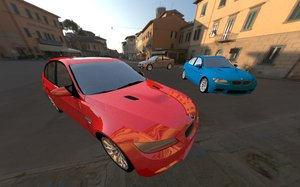

- pathtracer supports panorama and stereo modes
- pathtracer supports rotated environment and blend of two environments (like all other GI solvers)
- pathtracer properly illuminates objects with negative scale
- pathtracer can illuminate and cast shadows on background (instructions)
- improved Oculus Rift, HTC Vive etc support
- SceneViewer uses all DK2 features (camera, low persistency..) in "extend desktop" mode
- "direct HMD access" mode will work when Oculus developers fix it
- it is important to disable expensive effects (SSGI/DOF/mirrors...) to maintain smooth 75Hz, any drop below 75Hz is very unpleasant for eyes
- multipliers for all GI components
- all solvers and renderers accept new structure RRSolver::Multipliers
- replaces various lighting multipliers scattered around SDK (e.g. RRSolver::setDirectIlluminationBoost())
- available in sceneViewer(), see GI panel / Multipliers
- Visual Studio 2012 and 2013 integration
- full support for textures projected by light
- RRLight::projectedTexture replaces rtProjectedTexture
- works in all solvers and renderers, so also in baking and in pathtracer
- improved scene viewer
- "Fire+path" technique added, automatically switches from Fireball to Pathtracer after 0.2s of inactivity
- icons, xyz gizmo, mouse navigation work also in panorama modes
CHANGES
- RRColorSpace replaces RRScaler
- create_sRGB() replaces createRgbScaler()
- fromLinear() replaces getCustomScale() and getCustomFactor()
- toLinear() replaces getPhysicalScale() and getPhysicalFactor()
- RRSolver
- RRSolver::updateLightmaps() has paramsDirect and paramsIndirect merged, it makes work with all new multipliers much easier
- get/setScaler() renamed to get/setColorSpace()
- RRBuffer
- RRBuffer::getElement() and RRBuffer::setElement() inputs/outputs are linear when scaler is passed as parameter
- interpolation in RRBuffer::getElementAtPosition() is optional
- RRMaterial
- reduced automatic RRMaterial::minimalQualityForPointMaterials, makes baking at the same settings slower, but quality higher
- colorPhysical renamed to colorLinear
- convertToPhysicalScale renamed to convertToLinear
- convertToCustomScale renamed to convertFromLinear
- RRMatrix3x4Ex added, some functions switched from RRMatrix3x4 to RRMatrix3x4Ex
- RRCamera
- stereo and panorama enums and variables moved from stereo and panorama plugins to RRCamera
- RRCamera::setView() has more parameters, lets you zoom to whole scene or selected area
- RRCamera::getPositionInClipSpace() added
- RRCamera::getPositionInViewport() replaces RRCamera::getPositionInWindow(), returns also depth
- RRCamera::getRay() replaces getRayOrigin() and getRayDirection(). y parameter was negated, to make it compatible with RRCamera::getPositionInViewport()
- RRCamera::setRangeDynamically() second parameter has changed
- RRCollider
- RRCollider::getDistancesFromCamera() has new parameter shadowRays
- RRCollider::getDistancesFromPoint() has new parameter shadowRays
- all RRRay* changed to RRRay&
- RRLight
- PHYSICAL renamed to REALISTIC
- RRObjects
- RRObjects::mergeObjects() added
- RRObjects::createMultiObject() replaces RRObject::createMultiObject()
- updateColorPhysical renamed to updateColorLinear
- RR_SAFE_XXX() functions moved to rr namespace; and they NULL pointer before freeing/deleting/releasing object, not after (it's bit safer in case of exception)
---------------------------------— 2014.10.16 ----------------------------------—
NEWS
- pathtracing
- this is early preview, suffers from noise
- classical rendering technique added as an option
- unbiased, converges to accurate result
- interactive, much slower than our realtime GI techniques
- integrated into SceneViewer (change "Global illumination / Technique" to "Pathtracing"; note that some options don't work for some techniques)
- RRSolver::pathTraceFrame() renders single frame
- RRMaterial::getResponse() and RRMaterial::sampleResponse() provide building blocks for external pathtracers working with Lightsprint data
- quad buffered stereo support
- new rr_gl::StereoMode rr_gl::SM_QUAD_BUFFERED
- sceneViewer() support included (User preferences / Stereo mode)
- rendering of contours
- rr_gl::PluginParamsContours
- silhouettes, creases

- hiding objects
- RRObject::enabled, clear this flag to hide object
- fully implemented only for dynamic objects, hidden static objects might be still visible
CHANGES
- merge of custom (sRGB) and physical materials
- RRMaterial::Property::colorPhysical added
- getMultiObjectCustom() and getMultiObjectPhysical() merged into RRSolver::getMultiObject()
- RRObject::getPointMaterial() has one more parameter (scaler), necessary for filling colorPhysical
- rr_gl::RRSolverGL::updateEnvironmentMap() implementation never falls back to RRSolver::updateEnvironmentMap() caller should directly call RRSolver::updateEnvironmentMap() if he prefers it over RRSolverGL's version (RRSolverGL builds higher quality envmaps, but RRSolver is much faster for low resolution envmaps)
---------------------------------— 2014.05.06 ----------------------------------—
NEWS
- faster colliders
- new RRCollider::IT_BVH_FAST technique, builds 100-1000x faster than old techniques. Used by default.
- new RRCollider::IT_BVH_COMPACT technique, more compact than IT_BVH_FAST
- if you explicitly specified one of IT_BSP_ colliders in your code, make sure to switch to IT_BVH_, otherwise you won't see any speedup
- custom RRCollisionHandler-s might need small modifications: IT_BVH_ collisions arrive unordered, while IT_BSP_ collisions arrive ordered by distance
(so when handler accepts collision, IT_BSP_ collider ends testing immediately, while IT_BVH_ might still find closer collision and send it to the handler)
- improved panorama rendering
- new panorama mode: rr_gl::PM_FISHEYE with configurable field of view
- panorama coverage modes: full, stretched, truncated bottom, truncated top (rr_gl::PanoramaCoverage)
- all panorama modes respond to camera rotation
- improved DOF
- fast DOF is faster
- both fast and realistic DOF produce much closer results, fast DOF can be used as a preview for Realistic one
- improved tonemapping
- new options added to rr_gl::ToneParameters
- saturation adjustment
- hue shift
- color steps
- new tonemapping plugin (rr_gl::PluginParamsTonemapping) applies all these operation
- new options added to rr_gl::ToneParameters
- custom collider builders can be registered with RRCollider::registerTechnique()
- rendering statistics
- plugins expose named counters, rr_gl::NamedCounter
- application can read them with rr_gl::Renderer::getCounters()
CHANGES
- tonemapping
- old rr_gl::PluginParamsTonemapping renamed to rr_gl::PluginParamsTonemappingAdjustment, because it only adjusts parameters
- following functions/structures have two old parameters (brightness and gamma) replaced with one (rr_gl::ToneParameters):
- BREAKING CHANGE: find all places where you call render2D() or render2DBegin() and replace two parameters with one. old code might compile even if not fixed, but it would be wrong
- PluginParamsScene::updateLayers split into rr_gl::PluginParamsScene::updateLayerLightmap, rr_gl::PluginParamsScene::updateLayerEnvironment (for more fine grained control)
- RRObjects::buildUnwrap() has additional parameter that controls quality
- removed RRCollider::TEST_SINGLESIDED (it can be emulated with simple collision handler)
---------------------------------— 2014.02.05 ----------------------------------—
NEWS
- extensible plugins based rr_gl::Renderer replaces old rr_gl::RendererOfScene with a fixed set of features and effects
- initial set of 12 plugins replaces and exceeds old functionality
- easier to use, no dynamic allocations, all is configured via small rr_gl::PluginParams structure passed to renderer
- easier to customize, new plugins can modify nearly any part of rendering pipeline
- postprocesses work also in stereo and panorama modes
- can render custom set of objects, not just contents of solver
- Lightsprint/GL/PreserveState.h header with helper functions made public, previously internal
- screen space global illumination, plugin rr_gl::PluginParamsSSGI
- postprocess, simulates single short distance light bounce, with color bleeding
- can be used with Fireball or Architect realtime GI solvers to improve realtime GI quality (GI solvers contribute low frequency GI, SSGI adds high frequencies)
- can be used with constant ambient to add at least some GI effects to non-GI render
- is a realtime alternative to baked LDM
 on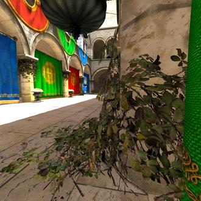off
on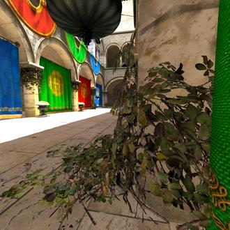off 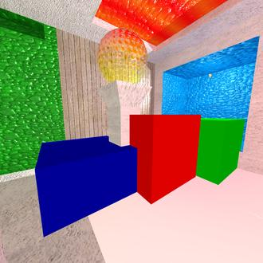
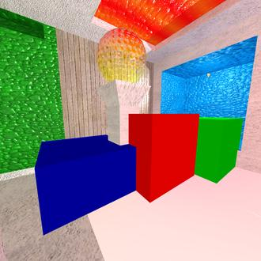
- physically based depth of field
- configurable aperture/bokeh shape
- configurable aperture size
- works by adding new plugin rr_gl::PluginParamsAccumulation somewhere after rr_gl::PluginParamsDOF
- Oculus Rift, HTC Vive etc support 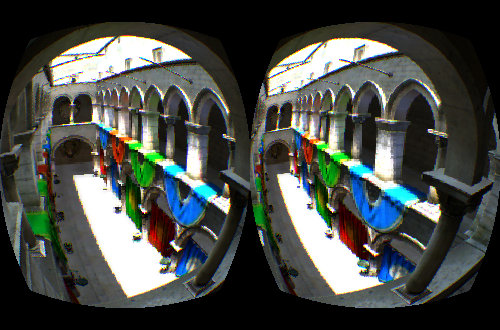
- VS2013 support added, VS2005 and VS2008 removed
- scene viewer
Preferences / Max fpslets you switch between max fps for benchmarking and adaptive vsync for smoother image
CHANGES
- rr_ed::sceneViewer() moved into new LightsprintEd library
- new rr_ed namespace
- Lightsprint/GL/SceneViewer.h renamed to Lightsprint/Ed/Ed.h
- Lightsprint/IO/ImportScene.h renamed to Lightsprint/IO/IO.h
- RRDynamicSolver[GL] renamed to RRSolver[GL]
- several path/filename parameters changed from char* to RRString for more complete unicode support
you might need to pass "" instead of NULL if old code fails to compile - When porting your code to use new renderer, change old to new#include "Lightsprint/GL/Bloom.h"//#include "Lightsprint/GL/RendererOfScene.h"//RendererOfScene* rendererOfScene;//...allocation of Bloom* bloom;RenderParameters rp;rp.uberProgramSetup.enableAllLights();rp.uberProgramSetup.enableAllMaterials();rp.uberProgramSetup.POSTPROCESS_BRIGHTNESS = true;rp.uberProgramSetup.POSTPROCESS_GAMMA = true;rp.camera = &eye;rp.brightness = brightness;rp.gamma = contrast;solver->renderScene(rp); // renders sky and objects using fixed rendererbloom->applyBloom(winWidth,winHeight,bloomThreshold); // adds bloom effect on top//...destruction of Bloom* bloom;#include "Lightsprint/GL/PluginSky.h"#include "Lightsprint/GL/PluginScene.h"#include "Lightsprint/GL/PluginBloom.h"//#include "Lightsprint/GL/Renderer.h"//Renderer* renderer;PluginParamsSky ppSky(NULL,solver); // first plugin in our chain, renders background, skyPluginParamsScene ppScene(&ppSky,solver); // second one, renders scene objectsppScene.uberProgramSetup.enableAllLights();ppScene.uberProgramSetup.enableAllMaterials();ppScene.uberProgramSetup.POSTPROCESS_BRIGHTNESS = true;ppScene.uberProgramSetup.POSTPROCESS_GAMMA = true;PluginParamsBloom ppBloom(&ppScene,bloomThreshold); // third one, adds bloom effect on topPluginParamsShared sp; // common parameters shared by all pluginssp.camera = &eye;sp.viewport[2] = winWidth;sp.viewport[3] = winHeight;sp.brightness = brightness;sp.gamma = contrast;solver->getRenderer()->render(&ppBloom,sp); // runs plugin chainLightsprintGL | bloom postprocess.LightsprintGL | renders given objects and lights.LightsprintGL | renders sky.
---------------------------------— 2013.09.29 ----------------------------------—
NEWS
- little planet panorama rendering mode 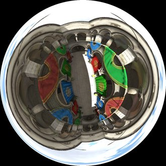
- higher quality reflections
- for cubemap resolutions >=32, rr_gl::RRDynamicSolverGL::updateEnvironmentMap() produces faster and higher quality data using rasterizer instead of raytracer
- emissive multiplier now available in all solvers
- RRDynamicSolver::UpdateParameters::applyEmittance added, lets you bake with emissive multiplier
- RRDynamicSolver::CalculateParameters::materialEmittanceMultiplier now works also for Architect solver (previously Fireball only)
- misc helpers
- rr_gl::RendererOfScene::renderToCube()
CHANGES
- RRDynamicSolver::setDirectIllumination() byte order changed from ABGR to RGBA
- additional parameters in RRDynamicSolver::updateEnvironmentMap()
- removed GL/Camera.h, rr_gl::setupForRender(), no longer needed
- custom renderer in RealtimeRadiosity sample simplified, removed display lists
- RRFileLocator::setLibrary() removed, use RRFileLocator::setParent()
FIXES
- there was bias towards brighter corners in highly tessellated scenes
---------------------------------— 2013.08.28 ----------------------------------—
NEWS
- equirectangular panorama rendering
- enabled via rr_gl::RenderParameters::panoramaMode 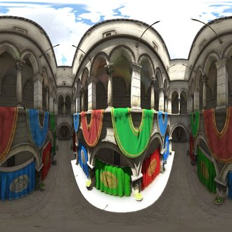
- enabled via rr_gl::RenderParameters::panoramaMode
- improved unwrapper
- can be aborted more quickly
- survives crashes in Microsoft code
- marks meshes that failed
- RRMeshArrays::unwrapChannel, set at unwrap time
- RRMeshArrays::unwrapWidth, set at unwrap time
- RRMeshArrays::unwrapHeight, set at unwrap time
- improved scene viewer
- enhanced baking dialog, can use resolution set at unwrap time
- Object / Illumination lists all illumination textures, click to show
- Scene / Camera / Panorama enables panorama rendering mode
CHANGES
- rr_ed::SceneViewerState::eye renamed to rr_ed::SceneViewerState::camera
FIXES
- possible crash after smoothAndStitch() of dynamic object
---------------------------------— 2013.07.11 ----------------------------------—
NEWS
- bump maps, parallax mapping and specular highlights are visible also with lightmaps, in shadows and under ambient lighting
- misc helpers
- RRDynamicSolver::getDirectIllumination()
CHANGES
- rr_gl::RRDynamicSolverGL::render() and rr_gl::RenderererOfScene::render() parameters moved into rr_gl::RenderParameters structure
please modify your code and especially your own implementations of virtual RRDynamicSolverGL::render() to use the same parameters
---------------------------------— 2013.06.29 ----------------------------------—
CHANGES
- rr::RRObjects::smoothAndStitch() has three more parameters for finer control, removeUnusedVertices, stitchPositions and stitchNormals
---------------------------------— 2013.06.25 ----------------------------------—
NEWS
- depth of field
- rr_gl::DOF
- Scene viewer has it in Scene properties/Render extras
- refraction
- rr_gl::UberProgramSetup::LIGHT_INDIRECT_ENV_REFRACT
- Scene viewer has it in Scene properties/Render material/Trensparency/Refraction Realtime refraction onOff
- GPU accelerated pathtracer SmallLuxGpu included
- Scene viewer integration: click Windows/SmallLuxGPU to see the same scene pathtraced
- export scene to SmallLuxGpu format by scene.save("foo.scn")
- configure SmallLuxGpu via data/scenes/SmallLuxGpu/scene.cfg
- open scene in SmallLuxGpu by bin/win32/slg4.exe scene.cfg
- sRGB correctness (more accurate rendering) in Scene viewer is enabled by default, as pathtracer is also sRGB correct
- note, this is development version of SmallLuxGpu 4, not a final product Pathtraced refraction, not realtime
- shadow bias can be controlled
- RRLight::rtShadowmapBias
- Scene viewer has it in Light properties
- transparency threshold can be controlled
- RRMaterial::specularTransmittanceThreshold
- Scene viewer has it in Material properties
- misc helpers
- RRBuffer::createEquirectangular(), helps when exporting environment to third party renderer that supports only equirectangular format
- RRBuffer::rotate(), rotates contents of buffer by multiples of 90 degrees
- RRFileLocator::exists(), tests whether file exists, override it when adding support for your virtual filesystem
- RRScene::getAllBuffers()
- RRFileLocator::setRegexReplacement()
CHANGES
- rr_gl::RendererOfScene::render() parameter animationTime added
please add the same parameter to your own implementations, if any - rr_gl::RRDynamicSolverGL::renderScene() parameter animationTime added
please add the same parameter to your own implementations, if any - allocateBuffersForRealtimeGI() 5th parameter added
please check all places where you pass 5 or more parameters and insert 5th one - rr_ed::sceneViewer() 4th parameter changed, remove "shaders/" from the end of string
- rr_gl::LensFlare() parameter changed, change "shaders/" at the end of string to "maps/"
- rr_io::registerLoaders() parameters argc,argv added
- rr_io::isolateSceneLoaders() parameters argc,argv added
- when creating new fileformats with RRSerialization.h, see new class SerializationRuntime
- RR_RR2STREAM and RR_WX2STREAM macros removed, no longer needed when including "boost/filesystem/fstream.hpp" instead of "fstream"
- RRDynamicSolver::FilteringParameters::spreadForegroundColor default changed from 0 to 1000
---------------------------------— 2012.12.21 ----------------------------------—
NEWS
- Visual C++ 2012 support
- specular maps, with optional shininess/roughness in alpha
- full support for non-uniformly scaled objects
(lightmap baking, realtime GI etc, everything should work correctly also with non-uniformly scaled objects) - misc helpers
- RRMaterial::specularTransmittanceMapInverted, lets you invert material transparency with single flag, no need to invert all pixels
- RRMatrix3x4::transformNormal()
- RRMatrix3x4::getTransformedNormal()
- RRMatrix3x4::rotationByQuaternion()
- RRMatrix3x4::getQuaternion()
- RRObjects::buildUnwrap() has one more parameter
- RRObject::getInverseWorldMatrix()
- RRObject::getInverseWorldMatrixRef()
CHANGES
- FaceGroups::getTexcoords() removed, no longer needed
---------------------------------— 2012.11.22 ----------------------------------—
NEWS
- environment/skybox can be rotated by parameter, without modifying texture
- extra paremeters in RRDynamicSolver::setEnvironment(), RRDynamicSolver::getEnvironment(), TextureRenderer::renderEnvironment()
- better support for scenes without static objects (fully dynamic)
- automatic camera views work
- automatic camera near/far works
- Sun shadows work
- misc helpers
- RRMatrix3x4::getAxisAngle()
- RRDynamicSolver::getAABB()
- RRRay::convertHitFromMultiToSingleObject()
- RRObjects::optimizeFaceGroups()
CHANGES
- RRCamera::setRangeDynamically() has different parameters (so that it can take dynamic objects into account)
- RRCamera::setView() has different parameters (so that it can take dynamic objects into account)
- RealtimeLight::configureCSM() has different parameters (so that it can take dynamic objects into account)
- RRObject::generateRandomCamera() removed, use RRCamera::setView(RRCamera::RANDOM)
---------------------------------— 2012.09.17 ----------------------------------—
NEWS
- improved materials
- material saving/loading
- RRMaterial::load()
- RRMaterial::save()
- .rrmaterial fileformat introduced
- any other material fileformat can be supported by registering its load/save callbacks
- RRMaterials, collection of materials, with support for loading/saving
- RRMaterial::preview, optional image of material
- RRMaterial::operator ==
- material saving/loading
- improved Scene Viewer
- drag with shift to duplicate
- drag with control to multiply
- Material properties / Load, Save, Save library
- improved import, new fileformats:
- .ifczip (Industry Foundation Classes)
- .blend (Blender)
- .lws (LightWave)
- .raw (PovRAY)
- .ms3d (Milkshape 3D)
- .b3d (BlitzBasic)
- .vta (Valve)
- .xgl
- .zgl
- .acc
- .ask
- .enff
- .mot
- .prj
- improved mirroring
- faster at the same quality, option to make it even faster at reduced quality
- setting LIGHT_INDIRECT_MIRROR_MIPMAPS keeps old high quality mode
- not setting LIGHT_INDIRECT_MIRROR_MIPMAPS enables new high speed mode
- misc helpers
- RRMeshArrays::manipulateMapping()
- RRMeshArrays::resizeMesh() has one more parameter
- rr_gl::readPixelsToBuffer()
---------------------------------— 2012.06.28 ----------------------------------—
NEWS
- improved stereo
- interlaced, side by side and top down stereo modes
- mode is selected by single additional parameter sent to renderer
- improved Scene Viewer
- supports new stereo modes (User preferences/Stereo)
- supports HDR lightmaps (Global Illumination/Baking/HDR)
- fixed mirroring in stereo mode and in enhanced screenshots
- misc helper functions added
- RRDynamicSolver::getObjects()
- RRObjects::layerExistsInMemory()
- RRObjects::layerDeleteFromMemory()
- RRObjects::layerDeleteFromDisk()
CHANGES
- support for 9 years old Visual Studio 2003 removed
---------------------------------— 2012.05.16 ----------------------------------—
NEWS
- improved water
- removed rr_gl::Water, instead create large quad (dynamic object) and give it transparent normal mapped material. This leads to following advantages:
- water has easier API, no special class needed (previously class Water, whole scene render had to be called twice)
- water can have any planar shape (previously only infinite plane without holes)
- water can be imported from 3d scene formats that support normal maps, e.g. Collada (previously no import)
- water look can be tweaked using much more options (previously only color)
- water receives shadows (previously did not)
- water reflects multiple lights (previously only one was reflected)
- water can be transparent, with geometry under the water visible (previously opaque)
- water can cast fresnel shadows, similar to caustics (previously opaque shadows)
- water can have arbitary waves, defined by normal map video (previously single hardcded wave animation)
- rr_gl::UberProgramSetup::MATERIAL_NORMAL_MAP_FLOW added, animates water when static normal map is set. rr_gl::UberProgramSetup::enableUsedMaterials() enables it when material name contains "water"
- deep water recipe: add plane, give it normal map, index of refraction 1.4, little bit of specular reflectance, little bit of blueish emittance, no transmittance, no diffuse reflectance, call material "water"
- shallow water recipe: unlike deep water, add lots of transmittance, don't add emittance Deep waterShallow water
- Fresnel blending + Fresnel shadows
- rr_gl::UberProgramSetup::MATERIAL_TRANSPARENCY_FRESNEL renders specular transmittance and reflectance adjusted according to index of refraction
- rr_gl::RealtimeLight::FRESNEL_SHADOWS renders shadows adjusted according to index of refraction
- note that RRMaterial::refractionIndex must be set properly, there is no effect with default index 1 Legacy: alpha blending, solid shadowsRGB blending and RGB shadowsFresnel blending and Fresnel shadows
- improved shininess (RRMaterial::specularShininess)
- shininess in automatic mirror reflections honoured
- shininess in environment reflections adjusted, it was too sharp
- default shininess changed from 100 to 1000 (Phong shininess 100 makes reflections very blurry, mirroring effect lost) Phong shininess 10100100010000
- improved normal maps (RRMaterial::bumpMap)
- import of normal maps and tangent space from Collada .dae (example: koupelna4.dae, exported from Max with OpenCollada plugin)
- RRMeshArrays::buildTangents() has one more parameter, generated tangent space is better for normal mapping
- height maps (RRMaterial::bumpMap)
- system automatically works with either normal map or height map assigned to bump map slot
- RRMaterial::bumpMapTypeHeight added, importers call RRMaterial::updateBumpMapType() to fill it automatically
- rendered with parallax mapping
- several identifiers with "normal" in name renamed to "bump", to make it clear that both normal maps and height maps are supported
- rr_gl::UberProgramSetup::MATERIAL_BUMP_TYPE_HEIGHT added, rr_gl::RendererOfScene sets it automatically when height map is used
- improved mirroring
- reflection is sharper closer to reflected objects
- works with normal maps
- does not leak light through walls
- faster
- LIGHT_INDIRECT_MIRROR renamed to rr_gl::UberProgramSetup::LIGHT_INDIRECT_MIRROR_SPECULAR
- rr_gl::UberProgramSetup::LIGHT_INDIRECT_MIRROR_DIFFUSE added, offers higher quality lighting for medium/large dynamic planes See how reflection gets sharpner closer to reflected object
- improved scene viewer
- move/rotate/scale gizmo, replaces various hotkeys
- editing capabilities were added years ago.. but now that we ship user friendly gizmo, is it finally time to call the thing "editor"?
- "Add sphere, box, plane, rectangle" added to "Scene tree/Dynamic objects/context menu"
- removed checkbox "Water", instead use new "Add plane", and give it transparent normal mapped material

- improved handling of missing textures
- when load fails, RRBuffer::load() optionally returns stub buffer instead of NULL; see new RRFileLocator::setAttempt(RRFileLocator::ATTEMPT_STUB,...)
- stub buffer contains original path to missing texture
- scene viewer preserves paths to missing textures, displays stub texture sv_missing.png instead
- RRBuffer::isStub() returns true for stub textures
- RRMaterial::updateColorsFromTextures() has additional stub related parameter
- improved robustness
- isolation of scene import into separated processes, see rr_io::isolateSceneLoaders()
- grayscale support
- grayscale data are created/imported/exported as real grayscale with single channel (rather than RGB with identical data in all channels)
- BF_LUMINANCE added for 8bit grayscale
- BF_LUMINANCEF added for 32bit floating point grayscale
- interpolation of matrices and lights (with API identical to interpolation of cameras)
CHANGES
- RRObjects::loadLayer()/saveLayer() construct lightmap filenames from object names, not from object numbers
- RRObject::LayerParameters::objectIndex removed, not needed in new scheme
- RRObjects::makeNamesUnique() added, call it to automatically differentiate objects with identical names. Objects with identical names would store lightmaps in the same file, overwriting each other.
- if you need to access lightmaps with old names (constructed from object numbers), stop using loadLayer(), use for cycle over all objects and load individual lightmaps with old filenames
- camera passed to renderer as parameter
- additional parameter in several functions
- rr_gl::getRenderCamera() removed
- rr_gl::UberProgramSetup cleanup
- rr_gl::UberProgramSetup::enableAllLights() added, replaces manual setting of all important lighting/shadowing flags
- rr_gl::UberProgramSetup::LIGHT_INDIRECT_auto removed, get the same result by setting LIGHT_INDIRECT_VCOLOR, _MAP and _DETAIL_MAP (or do nothing if you already call rr_gl::UberProgramSetup::enableAllLights())
- rr_gl::UberProgramSetup::LIGHT_INDIRECT_VCOLOR_PHYSICAL not enabled by default (RendererOfScene handles it automatically)
- rr_gl::UberProgramSetup::MATERIAL_CULLING is not enabled by default
if you don't enable it now, all your faces will be rendered as 2-sided
---------------------------------— 2012.02.26 ----------------------------------—
NEWS
- stereo rendering
- RRCamera::eyeSeparation
- RRCamera::focalLength
- RRCamera::getStereoCameras()
- in scene viewer, check Scene properties / Camera / [ ] Stereo (interlaced)
(screenshots must start on even line of your polarized display to display correctly, scroll a bit up or down if stereo looks wrong)
- rendering of shininess and environment maps
- environment reflected by objects is blurred according to material shininess
- environments are stored in layers, you can have multiple layers (access by illumination.getLayer() instead of illumination.specularEnvMap)
- environments can be saved/loaded by good old RRObjects::saveLayer()/loadLayer()
- scene viewer bakes and saves environment reflections together with lightmaps, supports rendering both at once
- Lightsprint's .rrbuffer fileformat introduced
- with save and load support
- for all static types of RRBuffer (2d textures, cube maps, vertex buffers, not video)
- replaces old vertex buffer format .vbu (.vbu still works, but we are no longer using it in samples/tools)
CHANGES
- rendering of shininess and environment maps
- allocateBuffersForRealtimeGI() has 4th parameter removed, 2nd added. If you call it, modify parameters your pass (!)
- rr_gl::UberProgramSetup::useIlluminationEnvMap() replaces useIlluminationEnvMaps(). If you call it, rename and modify parameters you pass (!)
- render() and renderScene() functions have one more parameter
- updateEnvironmentMap() has second parameter changed. If you call it, modify parameters you pass (!)
- RRObjectIllumination::getLayer(...) replaces specularEnvMap
pass the same layer number to getLayer() or allocateBuffersForRealtimeGI() and to renderer - RRObjectIllumination::diffuseEnvMap was removed, no longer needed
- OpenGL 3.2 or ARB_seamless_cube_map extension is used when available, seams in reflection can show up on legacy GPUs that don't support it
- RRLightField fileformat did change, without backwards compatibility, resave your lightfields
- rr_gl::initializeGL() replaces approx 10 lines of code previously repeated in all samples (calling glewInit(), checking that GL version is at least 2.0, setting some GL states)
- updateEnvironmentMapCache() removed, very rarely used
---------------------------------— 2012.02.13 ----------------------------------—
NEWS
- normal maps
- RRMaterial::normalMap lets you specify normal mapping
- rr_gl::UberProgramSetup::MATERIAL_NORMAL_MAP enables normal maps in realtime renderer
- import/export from .rr3
- rr_gl::UberProgramSetup::enableUsedMaterials() has second parameter added
(with and without normal map)
---------------------------------— 2012.01.16 ----------------------------------—
NEWS
- enhanced realtime renderer
- automatic realtime mirror reflections extended to work for all flat meshes, not just horizontal ones
- RRCamera::mirror() parameter extended from altitude to general plane
pass rr::RRVec4(0,-1,0,altitude) to keep the old behaviour - rr_gl::UberProgramSetup::CLIP_PLANE added, enables clipping by general plane
- parameter float* clipPlanes changed to rr_gl::ClipPlanes* clipPlanes,
includes general plane, in addition to old axis aligned planes
- math helpers
---------------------------------— 2011.12.24 ----------------------------------—
NEWS
mirror reflections
- automatically applied to absolutely flat horizontal objects (floor, ground...) that don't have specular reflection cube allocated
- greatly improves accuracy of specular reflection (more accurate and faster than highres specular reflection cubes)
- rendering enabled by rr_gl::UberProgramSetup::LIGHT_INDIRECT_MIRROR
- example of flat horizontal object (floor) is in koupelna4.dae
- demonstrated in samples: SceneViewer, Lightmaps, RealtimeLights
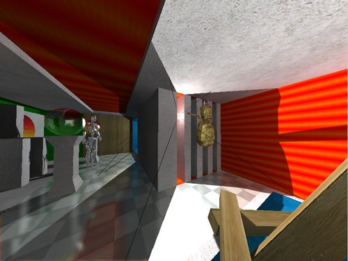RealtimeLights sample Lightmaps sample
Lightmaps sample- improved scene viewer
- Global illumination/Mirror reflections checkbox
- "Bake ambient maps" bakes indirect illumination only, saves with .indirect.png extension
- new rendering mode: Direct illumination=realtime, Indirect illumination=baked
- sample RealtimeLights modified so that dynamic objects move automatically, without holding spacebar
- RRMatrix3x4::transformPlane(), RRMatrix3x4::getTransformedPlane()
CHANGES
- renamed rr_gl::LD_STATIC_LIGHTMAPS -> rr_gl::LD_BAKED
- renamed rr_gl::LI_STATIC_LIGHTMAPS -> rr_gl::LI_BAKED
---------------------------------— 2011.11.29 ----------------------------------—
NEWS
- improved scene viewer
- Object properties / Rotation
- imports/exports camera
- improved import/export
- camera support in many formats, including .rr3, .dae
- improved Quake3 .bsp import, reads curved surfaces too
- "RRRay ray;" is now accepted code, previously you had to allocate all rays from heap
- RRCollider::getDistancesFromPoint() and RRCollider::getDistancesFromCamera() added
- rr_gl::TextureRenderer supports user defined gamma, one parameter added
CHANGES
- big Camera cleanup
- RRCamera from Lightsprint/RRCamera.h replaces rr_gl::Camera from Lightsprint/GL/Camera.h
- direct access changed to setXxx() and getXxx() accessors
- camera.update() removed, simply stop calling it, it's all automatic now
- change camera.setupForRender() to rr_gl::setupForRender(camera)
- change rr_gl::Camera::getRenderCamera() to rr_gl::getRenderCamera()
- blend() renamed to blendLinear()
- inverse matrices removed, camera is roughly 2x smaller now
- RealtimeLight tweaks
- getParent() renamed to getCamera()
- setParent() renamed to setCamera()
- updateAfterRealtimeLightChanges() removed, simply stop calling it, it's all automatic now
- getShadowmapCamera() outputs into camera provided by you, rather than allocating new camera
- rr_gl::TextureRenderer and rr_gl::Program use RRVec3/4 instead of float arrays
- RRMatrix3x4 tweaks
- added RRMatrix3x4::getColumn() and RRMatrix3x4::getRow()
- removed RRMatrix3x4::setScale(s), other scaling functions are sufficient
- increased realtime shadow offset (to solve all known cases of shadow acne)
---------------------------------— 2011.09.06 ----------------------------------—
NEWS
- improved dynamic object support
- bool RRObject::isDynamic added, saved to .rr3
- RRDynamicSolver::setStaticObjects() picks only objects with isDynamic=false, ignores the rest
- RRDynamicSolver::setDynamicObjects() picks only objects with isDynamic=true, ignores the rest
- RRDynamicSolver::getObject() added, returns n-th object, including dynamic ones
- improved scene viewer
- multiselection
- click item in Scene tree or in 3d viewport to select one
- use 'shift' to select range in Scene tree
- use 'ctrl' to toggle items in Scene tree or in 3d viewport
- use left dragging or wsadqzxc/arrows/pgup/pgdown keys to manipulate whole selection
- open context menu (e.g. by right click) in Scene tree or in 3d viewport to see actions available for your multiselection (merging, deleting etc)
- full dynamic object support
- "Dynamic" checkbox added to Object properties
- dynamic objects can be selected, manipulated etc
- shift/ctrl/alt while left dragging locks movement to one or two axes only while modifier key is pressed
- right dragging selection = rotation
- with ctrl: swaps direction of rotation
- with alt: rotates in view axis
- with shift: scales instead of rotating
- multiselection
- improved collisions
- RRDynamicSolver::getCollider() added, returns collider for whole scene, including dynamic objects
- RRRay::hitObject added, tells what object was hit by ray
- RRCollider::create() second parameter added, pass NULL for previous behaviour
- extended RRMatrix3x4
- 10 new constructors
- 1 new operator: ==
- 3 new functions: getYawPitchRoll(), invertedTo(), preScale()
- 3 renamed functions: transformedPosition() -> getTransformedPosition(), transformedDirection() -> getTransformedDirection(), translate() -> postTranslate()
- change RRMatrix3x4 m={1,0,0,0, 0,1,0,0, 0,0,1,0}; to RRMatrix3x4 m(1,0,0,0, 0,1,0,0, 0,0,1,0);
- misc tools
- unary operator - for RRVec2,3,4
- RRVector::pop_back() added
CHANGES
- rr_gl:Camera cleanup
- removed rr_gl:Camera::updateDirFromAngles, rarely used option
- camera rotation is defined by YXZ Euler angles in radians, see rr_gl::Camera::yawPitchRollRad
- change rr_gl::angle into rr_gl::yawPitchRollRad[0]+RR_PI
- change rr_gl::angleX into rr_gl::yawPitchRollRad[1]
- change rr_gl::leanAngle into rr_gl::yawPitchRollRad[2]
- change rr_gl::Camera(pos[0],pos[1],pos[2],a,b,c,...) into rr_gl::Camera(pos,RRVec3(a+RR_PI,c,b),...)
---------------------------------— 2011.08.16 ----------------------------------—
NEWS
- colliders can change technique on the fly
- RRCollider::setTechnique() added
- const removed from RRObject::getCollider() and RRObject::setCollider()
CHANGES
- RRRay::rayDir replaces RRRay::rayDirInv, it's no longer inverted
---------------------------------— 2011.07.18 ----------------------------------—
NEWS
- optimized Gamebryo Lightspeed 3.1.1 integration
- 5* faster "Bake from cache" on quadcore CPU
- greatly reduced memory footprint, can process much larger scenes
- You can request automatic update of light's near/far range in 3 ways
- RRDynamicSolver::reportDirectIlluminationChange() has new parameter dirtyRange, pass true
Note: If you reimplemented this function, add new parameter to your implementation. - set RealtimeLight::dirtyRange
- call RealtimeLight::setRangeDynamically()
- RRDynamicSolver::reportDirectIlluminationChange() has new parameter dirtyRange, pass true
- default lightmap filenames unified across all tools and samples
- first lightmap of foo/bar.3ds is foo/bar_precalculated/00000.png
- first directional lightmap of foo/bar.3ds is foo/bar_precalculated/00000.directional1.png etc
- BuildLightmaps commandline arg outputpath= is relative to 3d scene directory
- removed data/export directory
---------------------------------— 2011.06.29 ----------------------------------—
NEWS
- improved lightmap baking
- lightmap smoothing works across seams in unwrap, hides them
- default smoothing amount changed from 0 to 1, small amount of smoothing is nearly always desirable
- improved Scene viewer
- light movement by dragging light icon, shift/ctrl/alt for moving in one or two axes only
- "context menus/Delete components..." added
- "User preferences/Testing" options added
- improved mesh processing
- configurable distance between uvs when stitching vertices
- new parameter in RRMesh::createOptimizedVertices()
- convert RRObjects::stitchAndSmooth(a,b,c,d,e,f,g,h) into RRObjects::smoothAndStitch(a,b,c,d,f,g,e?-1:1e10,h), extended parameters
- deleting components
- RRObjects::deleteComponents() added
- RRObjects::buildUnwrap() second parameter removed, use deleteComponents()
- preserving/removing tangents
- RRMesh::createArrays() new parameter tangents
- RRMeshArrays::reload() new parameter tangents
- configurable distance between uvs when stitching vertices
---------------------------------— 2011.06.14 ----------------------------------—
NEWS
- AO can be baked into regular lightmaps to make corners darker
- new parameters in solver
- RRDynamicSolver::UpdateParameters::aoIntensity
- RRDynamicSolver::UpdateParameters::aoSize
- new commandline parameters in BuildLightmaps tool
- aointensity=
- aosize=
- new parameters in SceneViewer
- Scene propertiess/GI quality/Lightmap baking/AO intensity
- Scene propertiess/GI quality/Lightmap baking/AO size
- new parameters in Gamebryo Lightspeed integration
- LightsprintScene/LsAOIntensity
- LightsprintScene/LsAOSize
- To bake AO into lightmaps, set size, default is 0 (disabled). Good size could be 0.5m for interior scene. If it is set too high, whole scene is darkened or even becomes black.
- new parameters in solver
- improved Scene viewer
- new context menus in 3D viewport
- extended context menus in Scene tree
- extended "Scene properties/Global illumination"
- removed "Global illumination" from main menu
- LDM can be enabled also in Architect and Constant ambient modes (in Scene properties)
- lightmaps and LDMs can be baked for individual objects (in object's context menu)
CHANGES
- RRTime replaces old TIME, GETTIME, PER_SEC, GETSEC, Timer
- simpler
- more accurate
---------------------------------— 2011.05.19 ----------------------------------—
NEWS
- improved Scene viewer
- scene tree context menus with new functions
- scene
- Normalize units
- Normalize up axis
- objects
- Unwrap
- Smooth
- Tangents
- Merge
- single object
- Unwrap
- Smooth
- Tangents
- Delete
- scene
- object can be selected also by clicking it in 3d viewport
- object can be deleted by Del key
- dockable Log window
- Scene properties/GI quality/Realtime raytraced reflections/Specular threshold
- Scene properties/GI quality/Realtime raytraced reflections/Depth threshold
- scene tree context menus with new functions
- improved Gamebryo Lightspeed 3.1.1 integration
- "Bake to cache" supports also LsDirectLightMultiplier, LsIndirectLightMultiplier, LsMimicRealtimeLighting
- improved BuildLightmaps tool
- new parameters directmultiplier=,indirectmultiplier= replace old parameters direct,indirect
- skycolor= can be used to multiply skybox texture
- improved realtime rendering
- more accurate realtime lighting (part of calculation moved from per-vertex to per-pixel)
- projecting texture or video works even with disabled shadows
- RRDynamicSolver::allocateBuffersForRealtimeGI() has new parameters that control specular cube reflection
- misc helper functions
- .ifc import (Industry Foundation Classes)
---------------------------------— 2011.05.02 ----------------------------------—
NEWS
- transparent Unicode support
- as a user, you can use funny characters in filenames (works for all texture, video, vertex buffer filenames, .rr3 filenames)
- as a programmer, you can write L"foo.jpg" instead of "foo.jpg"
- RRString accepts and returns both unicode (wchar_t) and local charset (char) strings
- RRString replaces char* in
- .rr3 fileformat stores unicode filenames
- use RRString::clear() instead of string = NULL; (NULL is ambiguous)
- convert strings with RR_* macros (e.g. RR_PATH2RR) to make dangerous conversions searchable
- improved Gamebryo Lightspeed 3.1.1 integration
- Toolbench menu "Calculate to cache"
processes huge scenes in 64bit code, not limited by tiny address space of 32bit Toolbench
calculation is non-blocking, you can work in Toolbench and even close it
when calculation finishes, run "Bake from cache" to load lightmaps from cache to Gamebryo - Toolbench menu "Documentation"
- SDK includes patch to fix GI Package
- lightmaps are cached in temp, improves performance (asset controller slowed things down in old location)
- Toolbench menu "Calculate to cache"
- improved specular reflection
- Phong, Blinn-Phong, Torrance-Sparrow, Blinn-Torrance-Sparrow
- RRMaterial::specularModel added
- RRMaterial::specularShininess added, as a parameter for models above
- improved realtime renderer
- supports all specular reflection models
- supports spotlight exponent (RRLight::spotExponent)
- more detailed sun shadows
- advanced materials and lighting available also on low end GPUs
- Program::sendTexture() added, dynamically allocates texture units
- improved Scene viewer
- menu Global illumination/Build normals
- menu Global illumination/Build tangents
- Material properies/Specular/Model
- Material properies/Specular/Shininess,roughness
- User preferences/Debugging
- clicking object in Scene tree opens it also in Material properties
- dialog with options in in File/Merge
- improved BuildLightmaps tool
- "mapsize=w*h" parameter
- "outputname=" parameter
- "nothing" parameter
- misc helper functions
- RRObjects::stitchAndSmooth()
- RRMeshArrays::buildNormals()
- RRMeshArrays::buildTangents()
- RRMesh::createOptimizedVertices() parameter added, you can specify what uv channels must match for stitching
CHANGES
- all third party headers moved from include to include/Windows to prevent collisions on other platforms
- TEXTURE_XXX enum values replaced by TEX_CODE_XXX with slightly different use
- all strings in RRObject::LayerParameters changed from char* to RRString
automatic memory management, remove related _strdup() and free() from your code
---------------------------------— 2011.04.01 ----------------------------------—
NEWS
sRGB correct realtime rendering
- new sRGB correct path is more accurate, bit slower, requires OpenGL 3.0 or 2.x with extensions
- old path stays unchanged, works fine with OpenGL 2.0
- srgbCorrect parameter added to several rendering functions
(if you reimplemented virtual renderScene(), add srgbCorrect parameter to your version)
sRGB correct, spotlight is visible only in shadowsRGB incorrect, spotlight is visible even in sunlight- enhanced scene viewer
- Scene properties/GI quality/sRGB correct
- Scene properties/Environment/Speed
- User preferences/Tooltips
- enhanced color properties (color picker, main spin buttons for brightness)
- pgup/pgdn = movement in world up direction (q/z = movement in local up direction)
- pointlights move in camera directions
---------------------------------— 2011.03.17 ----------------------------------—
NEWS
- enhanced realtime shadows from Sun
- enhanced scene viewer
- Object properties/Materials
- Object properties/Scale
- enhanced BuildLightmaps tool, new parameters
- smoothing=
- brightness=
- contrast=
- enhanced RRMatrix4x3
- RRMatrix3x4::getScale() added
- RRMatrix3x4::setScale() added
- getUniformScale() removed, use getScale().abs().avg()
CHANGES
- for source code licensee only: updated to boost 1.46
- one parameter added to all RRFileLocator::setXxx() functions
to support multiple libraries, multiple parents etc
---------------------------------— 2011.02.21 ----------------------------------—
NEWS
- enhanced import
- added RRFileLocator (lets you exactly specify where to look for files, textures)
- added RRFileLocator* parameter to several import functions (flexibility added, use NULL for standard texture locations)
- RRBuffer::Loader replaces old RRBuffer::Loader and RRBuffer::Reloader (simplification)
- RRBuffer::registerLoader() replaces RRBuffer::setLoader() and RRBuffer::setReloader() (simplification)
- RRBuffer::registerSaver() replaces RRBuffer::setSaver() (lets you have multiple savers)
- RRBuffer::reloadCube() removed, use RRBuffer::reload()
- removed file location logic from all importers (simplification, handled by RRFileLocator)
- enhanced reporting
- messages are passed to all created reporters
- RRReporter::setReporter() and RRReporter::getReporter() removed
- RRDynamicSolver::getAllBuffers() can gather selected illumination buffers, second parameter added
---------------------------------— 2011.01.22 ----------------------------------—
NEWS
- faces with flipped front/back (e.g. from SketchUp) can be automatically corrected
- RRMeshArrays::flipFrontBack()
- RRObjects::flipFrontBack()
- scene viewer flips automatically (other samples don't)
- support for filtering cube map seams on GPU
- prefilterSeams parameter added to RRDynamicSolver::updateEnvironmentMap()
- prefilterSeams parameter added to RRLightField::captureLighting()
- if you want GPU to filter seams, set prefilterSeams=false and enable GPU filtering in renderer (in OpenGL by glEnable(GL_TEXTURE_CUBE_MAP_SEAMLESS);)
CHANGES
- emissiveMultiplier parameter removed from all scene import functions
- generic RRObjects::multiplyEmittance() added to compensate previous removal
---------------------------------— 2010.12.21 ----------------------------------—
CHANGES
- removed trivial functions in rr_gl::Camera, replace them with
- cam->moveForward(a) -> cam->pos+=cam->dir*a;
- cam->moveBack(a) -> cam->pos-=cam->dir*a;
- cam->moveRight(a) -> cam->pos+=cam->right*a;
- cam->moveLeft(a) -> cam->pos-=cam->right*a;
- cam->moveUp(a) -> cam->pos+=cam->up*a;
- cam->moveDown(a) -> cam->pos-=cam->up*a;
- cam->lean(a) -> cam->leanAngle+=a;
---------------------------------— 2010.12.16 ----------------------------------—
NEWS
- realtime RGB shadows
- correct realtime shadows from colored glass and other thin semi-translucent materials
- To see it, run SceneViewer sample, pick some shadow caster and change
Material properties / Transparency / colore.g. to red. Shadow is now red. ChangeScene properties / GI quality / Shadow transparencyfrom 24-bit (rgb shadows) to 0-bit or 1-bit to see the difference, standard shadows don't have color. - realtime GI improves as well (red shadow reflects red light etc)
realtime RGB blending
- correct realtime rendering of colored glass and other thin semi-translucent materials
- To see it, run SceneViewer sample and change
Material properties / Transparency / colore.g. to red. Everything seen through material is now red. ChangeScene properties / Render materials / Transparencyfrom 24-bit (rgb blending) to 8-bit (alpha blending) to see the difference, common alpha blending lets other colors pass through.
RGB shadows + RGB blendingmonochromatic shadowsalpha blending
CHANGES
- TransparentMaterialShadows renamed to ShadowTransparency
- transparentMaterialShadows split to rr_gl::RealtimeLight::shadowTransparencyRequested and rr_gl::RealtimeLight::shadowTransparencyActual
- very slightly increased effect of color bleeding (result of fix in GI solver)
---------------------------------— 2010.11.19 ----------------------------------—
NEWS
- video capture
- materials can play video capture in diffuse, emittance or transparency slot, GI updates in realtime
- spotlights can project video capture, GI updates in realtime
- environment can be streamed from video capture, GI updates in realtime
- total support throughout Lightsprint SDK, use c@pture as filename, instead of foo.jpg or foo.avi
- in any 3d scene file (collada, 3ds, obj...)
- in Scene Viewer's light properties and material properties or environment
- in your code
- full source code in
src/LightsprintIO/ImportDirectShow - supported in Windows only
FIXES
- compressed textures in 2010.11.10 Lightspeed integration contained black strips
---------------------------------— 2010.11.10 ----------------------------------—
NEWS
- improved Gamebryo Lightspeed 3.1.1 integration
- LightsprintScene / LsSmoothingAmount
- makes edges smoother, reduces noise, but washes out tiny details
- can be used to reduce bake time: reduce quality and enable smoothing to hide noise
- is a postprocess, so once you fill cache by "Bake lighting", you can change smoothing and quickly update lightmaps by "Bake from cache"
- more robust Lightsprint / Bake from cache, works even after small changes in scene
- more condensed warnings about wrong normals
- LightSpeed 3.2 beta support
- integration source code is compatible with unreleased GI Package for LightSpeed 3.2 beta
- new menu items Lightsprint / Bake selected, Bake selected from cache
- will let you bake lighting only for selected objects
- disabled in src/Lightsprint.Toolbench.Plugin.UI/plugin.xml due to bug in GI Package 2.1.1
- LightsprintScene / LsSmoothingAmount
- higher quality lightmap baking
- lightmap smoothing
- in scene viewer: Scene properties / GI quality / Lightmap baking / Smoothing amount, Wrapping
- RRDynamicSolver::FilteringParameters::smoothingAmount added
- RRDynamicSolver::FilteringParameters::smoothBackground removed
- RRDynamicSolver::FilteringParameters::spreadForegroundColor default changed to 0, it is no longer necessary to be 2
- lightmap resolution/unwrap gutter may be much smaller without introducing errors/leaks
- with unwrap charts optimally aligned, gutter may be as low as 1 texel without errors in lighting
- smaller resolution reduces bake time, saves memory and disk space
- smaller gutter increases utilization of lightmap space
- lightmap smoothing
- improved import/export
- 128bit .exr textures
- RRBuffer tools
---------------------------------— 2010.10.16 ----------------------------------—
NEWS
- improved import
- new fileformats supported
- Blender *.blend
- Quake3 *.pk3
- Nendo *.ndo
- new options in scene viewer
- User preferences / Import / Units
- User preferences / Import / Up axis
- new options in API
- new fileformats supported
- improved Gamebryo Lightspeed 3.1.1 integration
- LightsprintScene / LsMimicRealtimeLighting added
makes lightmaps more similar to realtime lighting - fixed bug that made lightmaps darker
- LightsprintScene / LsMimicRealtimeLighting added
- improved offline GI solver
CHANGES
- RRScene::RRScene() second parameter removed. If it was not 1, call RRScene::normalizeUnits()
- directional lightmaps are calculated for rendering with normalized tangent basis, like in Gamebryo
let us know if you need old behaviour, maps for rendering with unnormalized tangent basis
---------------------------------— 2010.10.07 ----------------------------------—
NEWS
- improved Gamebryo Lightspeed 3.1.1 integration
- baking GI for multiple scene configurations at once
- LsReplacementCase
- LsReplacementConfiguration
- If game always renders only one of several meshes (i.e. only one of bridge_new, bridge_damaged, bridge_collapsed), give them the same unique LsReplacementCase number (e.g. 100) and different LsReplacementConfiguration (e.g. 0,1,2). In a replacement case, different configurations don't shadow and illuminate each other; and only configuration 0 shadows and illuminates the rest of scene.
- "Relighting" can open/save scenes from/to disk, like standalone SceneViewer sample
- baking GI for multiple scene configurations at once
- enhanced scene viewer
- User preferences panel with lots of new options
- enhanced screenshot making, up to 16k*16k images with better shadows
CHANGES
- new render target API
- removed rr_gl::Texture::renderingToBegin() and renderingToEnd()
- added class rr_gl::FBO and header Lightsprint/GL/FBO.h
- provides much finer control over render targets
- all SDK elements support rendering to texture (solver, renderer, samples..)
---------------------------------— 2010.09.27 ----------------------------------—
NEWS
- panoramic textures, panoramic video
- no API changes, setEnvironment() now accepts more texture types
- no scene viewer changes, "Sky texture" now accepts more texture types
- 2d textures (not cross shaped) and videos are interpreted as 360*180 degree panorama in equirectangular projection
- fully supported, works in
- offline GI, illuminates scene
- realtime GI, dynamically illuminates scene
- realtime rendering
- blending, you can blend e.g. lowres HDR panorama video with hires LDR cubemap and it just works
- example images
- simpler and more flexible realtime GI
- RRDynamicSolver::reportMaterialChange() has two new parameters
lets you comfortably update things that were not updated before - RRDynamicSolver::CalculateParameters contains new settings,
gives you more control over GI calculation - RRDynamicSolver::setEmittance(parameters) removed, use existing RRDynamicSolver::reportMaterialChange(,true) and RRDynamicSolver::calculate(parameters)
- if emissive textures/videos change, Fireball updates GI automatically, it's not necessary to reportMaterialChange()
- RRDynamicSolver::reportMaterialChange() has two new parameters
- RRHash has new constructor
lets you calculate SHA-1 hash easily - enhanced realtime renderer
- faster rendering with blending in huge scenes (10x faster in scene with 25k objects)
- more detailed sun shadows in huge scenes (4x smaller details in 10x10km scene)
- enhanced scene viewer
- lots of new options in Scene properties / GI quality
- Window / Set viewport size
CHANGES
- RRBuffer::getElement(RRVec3) split in two functions
- RRBuffer::getElementAtPosition(RRVec3)
now you can sample also cube maps by planar coordinates - RRBuffer::getElementAtDirection(RRVec3)
now you can sample also panorama textures by direction
- RRBuffer::getElementAtPosition(RRVec3)
- RRBuffer::loadCube() and RRBuffer::reloadCube() accept also 2d textures (in hope they are panoramic)
- allocateBuffersForRealtimeGI() has fourth parameter inserted
Old code must be updated, find all allocateBuffersForRealtimeGI() calls with at least 4 parameters and insert fourth parameter -1. - LIGHT_INDIRECT_auto=true does not enable LIGHT_INDIRECT_ENV_DIFFUSE and LIGHT_INDIRECT_ENV_SPECULAR.
To get old behaviour, find all places where you set LIGHT_INDIRECT_auto=true and add LIGHT_INDIRECT_ENV_DIFFUSE=LIGHT_INDIRECT_ENV_SPECULAR=true.
---------------------------------— 2010.09.10 ----------------------------------—
NEWS
- skybox blending
- two skybox textures can be blended together
- GI is updated in realtime, without noticeable slowdown
- gamma correct, can blend both LDR and HDR
- RRDynamicSolver::setEnvironment() accepts optional second parameter, second texture
- RRDynamicSolver::setEnvironmentBlendFactor() controls how textures are mixed
- RRDynamicSolver::getEnvironment() accepts optional parameter, texture index, 0 or 1
- RRDynamicSolver::getEnvironmentBlendFactor()
- rr_gl::TextureRenderer::renderEnvironment() extended to support 2 skybox textures
- enhanced scene viewer
- unit conversion dialog when opening scene with unknown units
- skyboxes change with 3sec smooth transition with realtime GI
- flashlight, alt-f toggles it
- mouse wheel+ctrl moves camera forward/backward
- alt-1,2,3 sets custom window layout 1, 2 or 3
- improved realtime shadow (CSM maps blend together, reduced shadow acne, reduced bias in detailed sun shadows, increased bias in other shadows)
- light can be easily enabled/disabled at any moment
- RRlight::enabled
- scene viewer / Light properties / Enabled
- icons of disabled lights are dark
- RRMesh::getUvChannels() added
CHANGES
- scene viewer
- lights are inserted from scene tree context menu, main menu "Lights" was removed
- rr_gl::TextureRenderer
- renderEnvironmentBegin() and renderEnvironmentEnd() removed, use renderEnvironment()
---------------------------------— 2010.08.21 ----------------------------------—
NEWS
- improved Gamebryo Lightspeed 3.1.1 integration
- Lightmap postprocessing, new options added to LightsprintScene
- LsColorTone
- LsBrightness
- LsContrast
- You can change above settings in near realtime.
- First, you have to "Bake" once to fill cache.
- Then if you change postprocessing or compression option, click "Bake lighting from cache" for near instant update.
- You can see individual lightmaps (in float precision).
- Stored in (asset root)/PrecomputedLighting/cache.
- Images in cache are only for you, Gamebryo has lightmaps stored in .nif (where one can't easily see them).
- You can edit individual lightmaps (in float precision), in three steps
- "Bake"
- Then edit maps created in (asset root)/PrecomputedLighting/cache
- And finally "Bake from cache" to apply your maps
- Lightmap postprocessing, new options added to LightsprintScene
- enhanced realtime shadows from Sun
- smoother, more detailed, work in scenes of all sizes
- can be configured for higher speed or quality, use
- RRLight::rtNumShadowmaps
- "Light properties / Shadowmaps" in scene viewer
- enhanced scene viewer
- environment simulation
- Sun can be automatically positioned according to geolocation and datetime, see Scene properties / Environment
- Sun can be manually positioned also by azimuth and elevation angles, see Light properties
- removed Environment menu, functionality moved to Scene properties / Environment
- new mouse controls
- move mouse with left button pressed = looking around
- move mouse with middle button pressed = panning (pixel perfect)
- move mouse with right button pressed = inspection (rotates around clicked pixel)
- log window with "Abort" button shows up during slow operations
- more help in Help menu
- environment simulation
- enhanced camera
- in scene viewer
- Scene properties / Camera / View, can be set to Top, Bottom, Front, Back, Left, Right, Custom
- Scene properties / Camera / Orthogonal
- Scene properties / Camera / Center of screen
- when working with ortho camera, mouse wheel changes ortho size
- removed Camera menu, functionality moved to Scene properties / Camera / View
- l/r/f/b/t hotkeys change camera view (left, right, front, back, top)
- in rr_gl::Camera
- rr_gl::Camera::blendAkima() (lets you do spline transitions between cameras)
- rr_gl::Camera::setView()
- rr_gl::Camera::getView()
- rr_gl::Camera::screenCenter
- rr_gl::Camera::getPositionInWindow()
- rr_gl::Camera::getRayOrigin()
- negative near and far allowed
- in scene viewer
- new effects
- bloom
- rr_gl::Bloom
- in scene viewer: Scene properties / Render extras / Bloom
- lens flare
- rr_gl::LensFlare
- in scene viewer: Scene properties / Render extras / Lens Flare
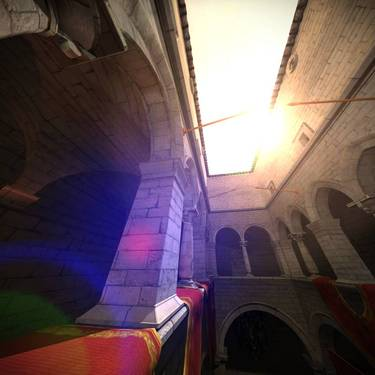 - bloom
- random small enhancements
- RRBuffer::brightnessGamma() added
- RRReporter::createWindowedReporter() has new parameter, lets you change log window title
CHANGES
- minor cleanup in camera and light
- renamed rr_gl::Camera::getDirection() to rr_gl::Camera::getRayDirection()
- removed rr_gl::Camera::setPosDirRangeRandomly(), use rr_gl::Camera::setView(RANDOM)
- removed second optional parameter in rr_gl::Camera::update()
- removed optional parameter in rr_gl::Camera::update()
- removed RRLight::rtMaxShadowSize
- added rr_gl::RealtimeLight::configureCSM(), called automatically from RRDynamicSolverGL::updateShadowmaps()
FIXES
- BuildLightmaps sample ignored "direct" and "indirect" parameters
---------------------------------— 2010.07.16 ----------------------------------—
NEWS
- improved Gamebryo Lightspeed 3.1.1 integration
- new LsUseNonPCLMeshes in LightsprintScene lets you exclude non-PCL meshes from baking
- new LsUseNonPCLLights in LightsprintScene lets you exclude non-PCL lights from baking
- baking respects IsCastingShadow and IsReceivingShadow in Mesh
- baking respects AlwaysAffectedByLight and NeverAffectedByLight in Light
---------------------------------— 2010.06.25 ----------------------------------—
NEWS
- high quality automatic unwrap generation
in code: call RRObjects::buildUnwrap()
in Scene Viewer: click menu Global Illumination / Build unwrap
changed default RRMaterial::lightmapTexcoord to UINT_MAX (no unwrap present)
improved diagnostics if unwrap is missing/invalid
removed old automatic unwrapping from default RRMesh::getTriangleMapping(,,0) - improved scene viewer
- File / Merge scene...
- small helper added rr_gl::Camera::blend()
CHANGES
- Modified lightmap filtering, better results with small gutter, sharp boundaries appear in lightmaps.
FIXES
- Fixed Scene viewer crash in Windows XP
- Workaround added for GI Package bug that made Gamebryo 3.1.1 crash
---------------------------------— 2010.06.03 ----------------------------------—
NEWS
- improved realtime renderer
- reduced shadow bias (more bits in shadowmaps)
- filtered shadowmap edges on Radeons HD 2400-5970
- antialiasing in Sceneviewer
- reduced z-fight in Sceneviewer (more bits in framebuffer depth)
- extended fallback mechanism for legacy GPUs, better results e.g. on Radeon X300
- custom clipping extended from 1 to 6 planes (ubershader parameter CLIP_PLANE extended to CLIP_PLANE_[X|Y|Z][A|B], parameter float clipPlaneY in rendering functions extended to float* clipPlanes)
- improved scene viewer
- spincontrols, edit by mouse click or motion
- readonly properties grayed out
---------------------------------— 2010.05.20 ----------------------------------—
NEWS
- full Visual Studio 2010 support (32bit, 64bit)
---------------------------------— 2010.05.11 ----------------------------------—
NEWS
- Gamebryo Lightspeed 3.1.1 integration
- HDR lightmaps support (automatic)
- updated to the most recent Lightspeed and GI Package versions
- parallelized Architect solver, 2.5x speedup on 4core CPU
- small API extensions
- RRBuffer::getMinMax() added
- RRObject::LayerParameter::createBuffers() optional parameter added
- new tone mapping settings in rr_ed::SceneViewerState (available also from SceneViewer GUI)
- tonemappingAutomaticTarget
- tonemappingAutomaticSpeed
CHANGES
- .rr3 format changed to ensure platform independence
- renames in rr_ed::SceneViewerState
- brightness renamed to tonemappingBrightness
- gamma renamed to tonemappingGamma
- adjustTonemapping renamed to tonemappingAutomatic
---------------------------------— 2010.05.01 ----------------------------------—
NEWS
- enhanced collada import (workarounds for know bugs in exporters etc)
- enhanced SceneViewer (grid options in Scene properties)
CHANGES
- if Visual Studio project needs specific DXSDK version, it explicitly specifies which one
- makes it possible to use different DXSDK versions in different projects, paths are specified in .vcproj
- should work without any changes on your side
- note: only Gamebryo integration needs DXSDK
---------------------------------— 2010.04.11 ----------------------------------—
NEWS
- saving 3d scenes
- scene viewer "File / Save scene" and "Save scene as..." added
- RRScene::save() added
- RRScene::getSupportedExtensions() split into RRScene::getSupportedLoaderExtensions() and RRScene::getSupportedSaverExtensions()
- RRScene::registerSaver() added
- RRScene::Saver added
- new scene formats (full list of Supported formats)
- Lightsprint .rr3, reading, writing
This is first time we introduce new format, after supporting ~35 existing scene formats. Advantages: 50-200x faster load, 2-6x smaller than other formats. You don't have to use .rr3, it's just an option. - trueSpace .cob, reading
- Lightsprint .rr3, reading, writing
- state of the art Collada support
- new robust OpenCollada based loader, fully contained withing LightsprintIO library, no additional headers or libraries
- Collada 1.5.0 support (in addition to 1.4.x)
- Google SketchUp support (SketchUp exports Collada with unusual instancig technique, other loaders don't support)
- two other Collada loaders (FCollada, Assimp) still available for reference
- FCollada disabled by default, executables don't depend on fcollada.dll/so
- editing 3d scenes
- you can freely edit RRScene objects, lights and environment (they were read-only before)
- enhanced SceneViewer
- "Material properties" shows texture miniatures and colors
- menu "Render" moved to "Scene properties"
- workspaces are persistent, saved to per-user config file
CHANGES
- when using RRScene
- change getObjects() to objects
- change getLights() to lights
- change getEnvironment() to environment
- you can edit objects, lights, environment, while getXxx() were for reading only
- when implementing RRScene
- change "objects =" to "protectedObjects ="
- change "lights =" to "protectedLights ="
- remove environment and getEnvironment() from your implementation, environment is now in RRScene
- moved from RRObjects to RRObject
---------------------------------— 2010.02.17 ----------------------------------—
NEWS
- video
- materials can play video in diffuse, emittance or transparency slot, GI updates in realtime video in emissive slot(setting it takes 4 clicks in SceneViewer)
- spotlights can project video, GI updates in realtime 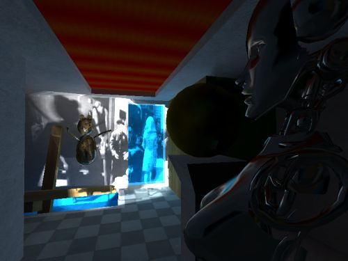projected video in RealtimeRadiosity sample
- plays with sound
- total support throughout Lightsprint SDK, use foo.avi instead of foo.jpg
- in any 3d scene file (collada, 3ds, obj...)
- in Scene Viewer's light properties and material properties
- in your code
- RRBuffer extended to let you control video
- full source code in
src/LightsprintIO/ImportDirectShow - serves also as an example of writing custom RRBuffer
- supported in Windows only
- spacebar in SceneViewer pauses/resumes videos
- materials can play video in diffuse, emittance or transparency slot, GI updates in realtime
- Lightspeed 3.1 integration adds
- Direct light multiplier
- Indirect light multiplier
- Emissive multiplier (newly also in LightsprintMesh)

- lightmaps are not built for plain Mesh entities, make your entity PCLMesh or LightsprintMesh to get lightmap
- added rr_gl::RealtimeLight::changesInProjectedTextureAffectGI,
makes it easier to manage GI quality when editing projected texture in realtime - added RRDynamicSolver::getAllBuffers(),
helper for gathering all texture filenames, memory statistics etc - added BF_BGR format,
for DirectShow interoperability
CHANGES
- RRLight::rtProjectedTexture replaces RRLight::rtProjectedTextureFilename and RealtimeLight::setProjectedTexture(),
simplifies API - RRBuffer::Loader and RRBuffer::setLoader() split in two,
- RRBuffer::Loader and RRBuffer::setLoader() sets implementation of RRBuffer::load()
- RRBuffer::Reloader and RRBuffer::setReloader sets implementation of RRBuffer::reload()
adds flexibility necessary for video importers
- const removed from environment in RRScene::getEnvironment(), RRDynamicSolver::getEnvironment(), RRDynamicSolver::setEnvironment(),
makes it easier to manipulate environment in realtime
---------------------------------— 2010.01.21 ----------------------------------—
NEWS
- enhanced SceneViewer
- added File / Save enhanced screenshot
- added Light properties / Shadow samples
CHANGES
- rr_gl::RealtimeLight::setNumShadowSamples() replaces rr_gl::RealtimeLight::softShadowsAllowed
---------------------------------— 2010.01.10 ----------------------------------—
CHANGES
- removed RRDynamicSolver::SmoothingParameters::minFeatureSize
---------------------------------— 2010.01.03 ----------------------------------—
NEWS
- support added for 30 scene formats
- see full list of Supported formats
- see full list of Supported formats
- RRBuffer::load() is faster and saves memory when loading the same image multiple times
- all images are transparently cached
- removed old caching from Collada adapter
- added RRBuffer::createReference()
- added RRBuffer::getReferenceCount()
- Visual Studio integration
- improved diagnostics
- added RRObjects::checkConsistency()
- added RRObject::checkConsistency()
- modified RRMesh::checkConsistency() parameters
- LightSpeed 3.1.1 integration always checks consistency before bake
CHANGES
- RRMaterial changes
- RRMaterial owns textures, it deletes them in destructor, custom adapters must stop deleting them to avoid double delete
- RRPointMaterial added, it is material that does not own/does not delete textures
- custom getPointMaterial() implementations must change output type from RRMaterial to RRPointMaterial
- RRMaterial is noncopyable, copying should be avoided, use RRMaterial::copyFrom() if necessary
- RRObject::createWorldSpaceObject() removed, let us know if you need it
- RRScene::registerLoader() expects extensions in "*.abc;*.cde" format rather than old "abc"
---------------------------------— 2010 beta (2009.12.11) ----------------------------------—
NEWS
- Lightspeed 3.1 integration
- new bake target Compressed Texture (6x smaller, DXT1 compression)
- manipulate everything in realtime, scene API extended from read-only to read-write
- mesh indices and vertices
- RRMeshArrays added, lets you edit index+vertex arrays
- RRMesh::createArrays() added, creates editable copy of mesh
- object materials
- RRObject::faceGroups added,
your RRObject implementation must fill it - RRObject::getTriangleMaterial() modified
- default implementation added, in most cases you can delete yours
- returned material is not const so it can be edited
- RRObject::updateFacegroupsFromTriangleMaterials() added
helps fill faceGroups
- RRObject::faceGroups added,
- object transformation
- RRObject::setWorldMatrix() added
- RRObject::getWorldMatrix() default implementation improved, delete yours, just call setWorldMatrix() once
- RRObject::getWorldMatrix() changed to const, delete or fix your implementation
- RRObject::getWorldMatrixRef() added
- object's collider and mesh
- RRObject::setCollider() added
- RRObject::getCollider() default implementation added, you can delete yours, just call setCollider() once
- works for all 40 supported formats
- mesh indices and vertices
- dynamic object support (completed)
- RRDynamicSolver::setDynamicObjects() added
- RRDynamicSolver::getDynamicObjects() added
- everything works as expected, simply set and manipulate dynamic objects, they render, affect illumination etc
- new realtime renderer
- faster, using less memory (in most cases)
- automatically renders also dynamic objects (but it's still possible to use custom renderer as in RealtimeRadiosity sample)
- you can change transformations, materials and textures on the fly, changes propagate to GPU automatically
- you can change geometry in RRMeshArrays on the fly, changes propagate to GPU automatically
- materials with smooth blending and materials with 1bit alpha can be combined
- static and dynamic objects sort and blend correctly if blending is used
- removed RendererOfRRObject, no longer necessary
- no longer necessary to call rr_gl::Texture::reset()
- enhanced SceneViewer
- added object properties window
- added material properties window

- rr_gl::RRDynamicSolverGL completed
- can be used for realtime rendering out of the box, does not contain pure functions
- rr_gl::RRDynamicSolverGL::renderScene() implemented, added parameters
- compressed buffer formats RRBufferFormat::BF_DXT1, BF_DXT3, BF_DXT5
- all important classes have editable names
- added RRString
- added RRBuffer::filename
- added RRLight::name
- changed RRLight::rtProjectedTextureFilename to RRString from char* (delete eventual _strdup() and free() from your custom adapter)
- changed RRMaterial::name to RRString from const char* (delete eventual _strdup() and free() from your custom adapter)
- added RRObject::name
- removed RRObject::getCustomData("const char* objectName"), use RRObject::name
- added small helpers
- RRMatrix3x4::isIdentity()
- RRMaterial::needsBlending()
- RRVector::resize()
- RRBuffer::version, updated to solver->getSolutionVersion() each time buffer is updated from solver
- greatly simplified samples
- new features listed above made source code of realtime rendering samples considerably shorter (e.g. RealtimeLights roughly 5x shorter)
CHANGES
- const removed from RRObject::getTriangleMaterial(), remove const from your implementations or delete your implementation.
This change makes returned materials writeable, they can be modified. - simplified scene adapters
- worldMatrix is stored in base RRObject, remove worldMatrix and getWorldMatrix() from your derived classes
- illumination is stored in base RRObject, remove illumination and getIllumination() from your derived classes
- objects and lights are stored in RRScene, remove your objects/lights variables and getLights()/getObjects() functions and objects/lights deleting from your derived classes
- RRScene::getObjects() and RRScene::getLights() return reference, user doesn't have to check for NULL
- cleanup in RRDynamicSolver
- removed RRIlluminatedObject
- RRObjects is now collection of RRObject
- illumination was moved to RRObject::illumination
- scene adapters no longer allocate/delete illumination -> simpler adapters
- change objects[i].object to objects[i]
- change objects[i].illumination-> to objects[i]->illumination.
- removed getNumObjects(), use getStaticObjects().size()
- removed getObject(i), use getStaticObjects()[i] and make sure i is not out of range, new version checks it only in debug
- removed getIllumination(i), use getStaticObjects()[i]->illumination and make sure i is not out of range
- extended RRDynamicSolver::allocateBuffersForRealtimeGI(), new parameters, you can use also new RRObjects::allocateBuffersForRealtimeGI()
- removed RRIlluminatedObject
- modified parameters of RRObject::createMultiObject(), array+length replaced by vector
- simplified rr_gl::RendererOfScene
- reduced to single simple function
- renders (and optionally updates) only illumination in existing buffers (vertex buffers, textures), you have to allocate these buffers first (using e.g. RRDynamicSolver::allocateBuffersForRealtimeGI()).
- renamed RRBuffer::getMemoryOccupied() to RRBuffer::getBufferBytes(), returns pure buffer data size without several bytes of fixed overhead
- removed rr_gl::RRDynamicSolverGL::getMaterialsInStaticScene(), no longer needed
- removed rr_gl::UberProgramSetup::recommendMaterialSetup(), use rr_gl::UberProgramSetup::enableAllMaterials()
- renamed rr_gl::UberProgramSetup::reduceMaterialSetup() to rr_gl::UberProgramSetup::reduceMaterials()
- removed RRObjectWithPhysicalMaterials
KNOWN REGRESSIONS
- old automatic unwrap is no longer working, it will be replaced by new higher quality unwrap
- realtime renderer ignores uv channel numbers above 100, let us know if you need them
---------------------------------— 2009.10.10 ----------------------------------—
NEWS
- internal hashing functions exposed
- class RRHash and include/Lightsprint/RRHash.h added
- RRObject::getHash() added
- RRMesh::getHash() modified to return RRHash
CHANGES
- additional parameter in RRDynamicSolver::loadFireball()
---------------------------------— 2009.10.06 ----------------------------------—
NEWS
- enhanced rr_ed::sceneViewer() and SceneViewer sample
- added light icons
- added scene properties window
- improved water rendering in rr_gl::Water
- see new parameters in rr_gl::Water::Water(), rr_gl::Water::render()
FIXED
- wrong light directions in Lightspeed integration
---------------------------------— 2009.09.24 ----------------------------------—
NEWS
- Lightspeed integration comes with preconfigured sample scenes
- enhanced rr_ed::sceneViewer() and SceneViewer sample
- added scene tree window
- all windows dockable
- small RRBuffer changes
- RRBuffer::flip() added
- RRBuffer::load() flip parameters removed, use flip() instead
- RRBuffer::SaveParameters added with jpeg quality, used as parameter in RRBuffer::save()
---------------------------------— 2009.08.30 ----------------------------------—
NEWS
improved Lightspeed integration
- bake is faster and uses less memory
- supports lightmap resolution calculated from mapping, see new properties
- LightsprintScene.LsPixelsPerWorldUnit
- LightsprintMesh.LsResolutionMode
- LightsprintMesh.LsResolutionMultiplier
- GIScene.LightingFile is set automatically, if needed
- if LightPCLObjectsAtRuntime && LightNonPCLObjectsAtRuntime, calculates indirect illumination only
- relighting in UI menu (testing only)
- small helper functions
- RRMesh::getMappingDensity()
- RRMatrix3x4::setIdentity()
- LightsprintGL source code comes with boost::serialization support
CHANGES
- Gamebryo
- if environment color is not set (=is black), it does not multiply environment texture
- several properties renamed
- RR_ prefix added to macros that did not have it yet (RR_CLAMP, RR_CLAMPED, RR_FLOAT2BYTE, RR_BYTE2FLOAT, RR_LIMITED_TIMES)
FIXED
- Visual C++ 2005 binaries did not run if Microsoft security updates were not installed
---------------------------------— 2009.08.15 ----------------------------------—
NEWS
- improved Lightspeed integration
- LightsprintModelLibrary added, new per-mesh and per-scene settings
- supports directional lightmaps (radiosity normal maps)
- supports environment (HDR or LDR texture, color..)
- works with GI Package 2.0.1
---------------------------------— 2009.08.02 ----------------------------------—
NEWS
- Lightspeed integration (Gamebryo 3.0) - testing version
- RRObject::getCustomData() added
makes it possible to access format specific data via generic RRObject interface
---------------------------------— 2009.07.18 ----------------------------------—
CHANGES
- additional parameter clipPlaneY in several rendering functions
FIXED
- realtime GI was incorrect in big scenes and in tiny windows
---------------------------------— 2009.06.29 ----------------------------------—
NEWS
- faster realtime render (up to 10x higher fps in huge high poly scenes, 10% speedup in small scenes)
- 2x lower video memory footprint in high poly scenes
---------------------------------— 2009.06.19 ----------------------------------—
CHANGES
- reduced number of dlls, all wxWidgets files are gone
- RRBuffer::setLoader() split into RRBuffer::setLoader() and RRBuffer::setSaver(),
both return previous loader/saver - source code licensee only:
- precompiled wxWidgets removed from SDK, build your own wxWidgets
- Runtime Library in all static configurations changed to DLL
---------------------------------— 2009.06.05 ----------------------------------—
NEWS
- faster realtime render (up to 2x higher fps in Lightsmark)
- enhanced rr_ed::sceneViewer() and SceneViewer sample
- new "Global illumination" menu adds capabilities, replaces "Realtime lighting" and "Static lighting" menus
- new parameter releaseResources lets you exit faster without releasing stuff
CHANGES
- several members of rr_ed::SceneViewerState renamed or added to better cover new capabilities
- new parameter lightIndirectVersion in several rr_gl rendering function
changing it only when illumination changes makes realtime render faster
---------------------------------— 2009.05.29 ----------------------------------—
NEWS
- enhanced rr_gl::TextureRenderer
- new parameter float gamma for gamma correction
- parameters float color[4] changed to RRVec4 color (pass RRVec4(1) where you passed NULL)
- enhanced rr_ed::sceneViewer() and SceneViewer sample
- help as overlay image
- new menu items: render FPS
- adjust contrast
- render logo
- render vignette effect
- RRMesh::getAABB() is much faster when called multiple times (results are cached in RRMesh)
- tone mapping can be configured for brighter or darker results
see new parameter targetIntensity in rr_gl::ToneMapping::adjustOperator()
CHANGES
- rr_gl::Camera::setRangeDynamically() replaces rr_gl::Camera::setNearDynamically()
new function sets both near and far
---------------------------------— 2009.05.16 ----------------------------------—
NEWS
- Gamebryo integration includes new realtime GI example, run samples/BuildLightmaps/Gamebryo-Realtime-Cathedral.bat
- UE3 integration supports work with selected objects only
- improved scene import
- improved diagnostics if VERIFY is defined (unwraps are checked, mesh numbers are reported thanks to RRMesh::checkConsistency() new parameter)
- .obj loader reads also normals and uvs
CHANGES
- different 3ds object numbers
previously, cameras and lights figured in RRObjects array as meshes with 0 triangles
---------------------------------— 2009.05.07 ----------------------------------—
NEWS
realistic realtime specular reflections
- enabled in rr_ed::sceneViewer() and SceneViewer and BuildLightmaps samples
default rr_ed::SceneViewerState::renderSpecular was changed to true - new RRDynamicSolver::updateBuffersForRealtimeGI()
allocates and updates vertex buffers and reflection maps, structures used to pass computed GI to external renderers - new RRDynamicSolver::allocateBuffersForRealtimeGI()
allocates vertex buffers and reflection maps, structures used to pass computed GI to external renderers

 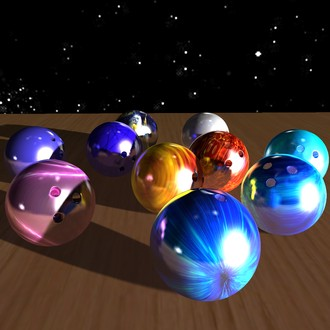
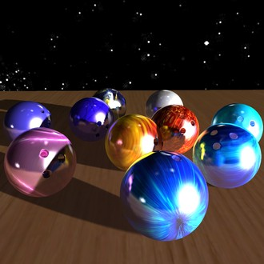- enabled in rr_ed::sceneViewer() and SceneViewer and BuildLightmaps samples
- new rr_gl::RendererOfScene::useRealtimeGI() function
simplifies realtime GI rendering
makes renderer allocate and update GI buffers automatically, using reasonable qualities and resolutions
CHANGES
- rr_gl::RendererOfScene::render() does not clear color buffer
To fix existing code, clear also color buffer before rendering scene, change glClear(GL_DEPTH_BUFFER_BIT); to glClear(GL_DEPTH_BUFFER_BIT|GL_COLOR_BUFFER_BIT);
FIXED
- black spots in lightmaps lit by spotlights
---------------------------------— 2009.05.02 ----------------------------------—
NEWS
realtime GI from emissive surfaces
- Fireball supports emissive surfaces
this makes Fireball complete, it calculates GI from all Light sources in real-time - new RRDynamicSolver::setEmittance()
streaming video to emissive map? Call this in every frame to update GI from updated emissive maps.
emissiveMultiplier parameter lets you multiply emittance globally
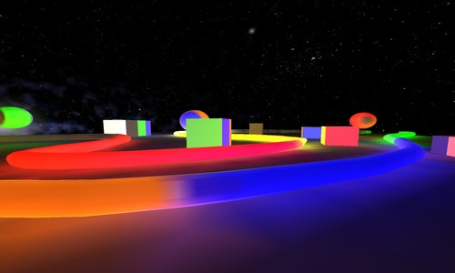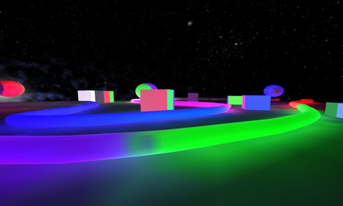- Fireball supports emissive surfaces
- improved 3ds import
- imports face sidedness, specular color
- if opacity map is the same as diffuse map, transparency is taken from alpha channel
- minor helpers
CHANGES
- default realtime GI solver in rr_ed::sceneViewer(), SceneViewer and BuildLightmaps samples changed to Fireball
Fireball makes rendering faster and GI is complete (includes skylight)
when opening scene for first time, Fireball is built automatically at medium quality 350
use menu Realtime lighting / Rebuild fireball to change quality
FIXED
- realtime renderer incorrectly illuminated 2-sided faces
- nearly opaque materials were handled as fully opaque, so light did not get through very dark glass
---------------------------------— 2009.04.20 ----------------------------------—
NEWS
realtime GI from skylight
- no API changes, build Fireball and set sky as usual (RRDynamicSolver::buildFireball(), RRDynamicSolver::setEnvironment()), but this time, all static and dynamic objects will be illuminated also by sky
- infinite light bounces
- fully dynamic, change sky as often as you wish
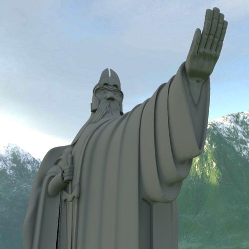
- new per-vertex illumination smoothing mode
- RRDynamicSolver::SmoothingParameters::maxSmoothAngle default is -0.01
this smooths per-vertex illumination where vertex normals are similar, ignoring RRDynamicSolver::SmoothingParameters::minFeatureSize. - RRDynamicSolver::SmoothingParameters::maxSmoothAngle default was 0.33,
this smoothed illumination where face normals were similar, with additional blur specified by RRDynamicSolver::SmoothingParameters::minFeatureSize. - new parameter in RRMesh::createOptimizedVertices() and RRObject::createMultiObject()
makes it possible to stitch only vertices with similar normals
- RRDynamicSolver::SmoothingParameters::maxSmoothAngle default is -0.01
- improved rr_ed::sceneViewer(), SceneViewer sample, BuildLightmaps tools
- new Environment / Load skybox... menu item
- improved cube map loading
- new RRBuffer::loadCube() and RRBuffer::reloadCube()
load cubemap specified by single filename, eventual filenames of other 5 sides are guessed
- new RRBuffer::loadCube() and RRBuffer::reloadCube()
- new math macros prefixed RR_ added to RRMath.h
- new utility functions RRDynamicSolver::containsLightSource() and RRDynamicSolver::containsRealtimeGILightSource()
CHANGES
- default per-vertex smoothing technique specified by RRDynamicSolver::SmoothingParameters::maxSmoothAngle was changed, see above
- loading cubemaps made of 6 files via RRBuffer::load() works with default parameters flipV and flipH = false, previously these had to be true
---------------------------------— 2009.04.15 ----------------------------------—
CHANGES
- RRMaterial moved to new header RRMaterial.h
(no changes to old code needed)
FIXES
- under specific circumstances, generic getPointMaterial() was called instead of custom one
---------------------------------— 2009.04.03 ----------------------------------—
NEWS
- improved Collada import, workarounds for Google SketchUp bugs
- rr_gl::sceneViewer() additional parameter makes it possible to specify skybox by filename
FIXES
- under rare circumstances, random pixels in lightmaps received random colors
---------------------------------— 2009.03.25 ----------------------------------—
NEWS
- full Visual Studio 2005 x64 support
- improved rr_gl::sceneViewer()
- new parameter makes it possible to view scene from file rather than from solver in memory
- new File menu with Open scene, Save screenshot
- new texture manipulation functions
- RRBuffer::createCopy()
- RRBuffer::setFormat()
- RRBuffer::setFormatFloats()
- RRBuffer::invert()
- RRBuffer::multiplyAdd() extends old to RRBuffer::multiply()
- RRMaterial::Property::multiplyAdd() extends old RRMaterial::Property::multiply()
- improved scene import
- rr_io::ImportScene with fixed set of formats replaced by extensible RRScene
- parameter stripPaths was removed, all loaders load textures from full paths as if stripPaths=false, but if it fails, second attempt is made automatically in scene directory as if stripPaths=true
- RRScene::getSupportedFormats()
- improved .3ds import (transparency, opacity map, self illum map...)
- improved transparency realtime rendering
CHANGES
- rr_io::setImageLoader() replaced by rr_io::registerLoaders()
new function registers also 3d scene loaders that did not need registration before - RRObjects moved from RRDynamicSolver.h to RRObject.h
FIXES
- MovingSun sample lighting was incorrect
---------------------------------— 2009.03.14 ----------------------------------—
NEWS
- Improved handling of overlapping triangles.
It's still recommended to avoid them, but if you must use them, chances are that precomputed lightmaps will be ok.
Previously UE3 skylight created dark strips where terrain segments overlap. - tangent space vectors are displayed in rr_gl::sceneViewer() with helpers enabled
FIXES
- UE3 materials had swapped R and B (incorrect color bleeding)
- one of cascaded shadow maps was not updated (incorrect realtime sunlight shadows)
---------------------------------— 2009.02.23 ----------------------------------—
NEWS
- UE3 integration produces higher quality lightmaps in proximity of SpeedTree meshes (fixed per-pixel material detection)
---------------------------------— 2009.02.19 ----------------------------------—
NEWS
- emissive multiplier, lets you boost or reduce emissivity in materials
- new parameter "emissivemultiplier=1" in BuildLightmaps tool
- new parameter in rr_io::ImportSceneRRLight::ImportSceneRRLight()
- adapters call new RRMaterial::Property::multiply() to apply emissive multiplier
---------------------------------— 2009.02.06 ----------------------------------—
NEWS
- RRLight::rtProjectedTextureFilename
lets you specify texture projected by light
CHANGES
- rr_gl::RealtimeLight::lightDirectMap replaced by
- rr_gl::RealtimeLight::setProjectedTexture()
- rr_gl::RealtimeLight::getProjectedTexture()
- RRLight::createMutableLight() replaced by new RRLight()
RRLight is now fully implemented, previously RRLight::getIrradiance() was pure/abstract
---------------------------------— 2009.01.10 ----------------------------------—
NEWS
- sample BuildLightmaps supports setting sky from commandline (HDR or LDR texture or 6 textures or flat color or upper and lower hemisphere color)
- improved realtime render of float textures
- uses floats where available, falls back to 8bit on ancient GPUs
- HDR skyboxes in physical scale are converted to sRGB in shader
FIXED
- Gamebryo adapter allocated too much memory and crashed in some scenes
---------------------------------— 2009.01.08 ----------------------------------—
NEWS
- UE3 integration produces higher quality lightmaps: now also SpeedTree materials are evaluated per-pixel
CHANGES
- default behaviour of back side of one sided material was changed
Previously, photons that hit back side of one-sided face were removed from simulation. Windows had to be made of 2-sided faces to transmit light in both directions.
Now photons are allowed to go through back side and refract according to material transmittance and refraction index. Windows transmit light in both directions even if they are made of 1-sided faces.
---------------------------------— 2009.01.07 ----------------------------------—
NEWS
- UE3 integration produces higher quality lightmaps: staticmesh and bspsurface materials are evaluated per-pixel
- 2x faster windowed reporter (RRReporter::createWindowedReporter())
(real world example: building preview quality lightmaps in scene with 11000 meshes and windowed reporter took 600s, now 500s)
CHANGES
- rr_gl::sceneViewer() second parameter removed (bool createWindow)
window is always created, false was ignored since sceneViewer rewrite in 2008.12.8
---------------------------------— 2008.12.19 ----------------------------------—
NEWS
- BuildLightmaps tool lets you change lightmap resolution, format etc for individual objects
- new RRObjects::recommendLayerParameters() recommends lightmap resolution, filename etc
CHANGES
- RRObjects::LayerParameters replaces RRIlluminatedObject::LayerParameters (added in previous release)
- RRObjects::createLayer() was removed (added in previous release),
new RRObjects::recommendLayerParameters() is more flexible
---------------------------------— 2008.12.8 ----------------------------------—
NEWS
- Gamebryo integration
- new BuildLightmaps tool
- new GUI in rr_gl::sceneViewer()
- all light properties editable in new Light Properties window
- context menu changed to menu bar
- LightsprintGL does not depend on glut (remains in SDK, because samples use it)
- LightsprintGL depends on wxWidgets (precompiled Windows version added to SDK)
- minor other changes in controls
- simplified mesh adapters (RRMesh implementations in LightsprintIO reduced by 30%)
- RRChanneledData removed
- RRMesh::getTriangleMapping() extended to support multiple texcoord channels
- RRMaterial::lightmapTexcoord added
- point materials API simplified, point materials faster, used more often
- for point materials, you need only to set material textures and call RRMaterial::updateColorsFromTextures(), everything else is handled by default implementation of RRObject::getPointMaterial()
- custom RRObject::getPointMaterial() implementations removed from adapters
- RRMaterial::minimalQualityForPointMaterials replaces RRSideBits::pointDetails (no need to touch it)
- Point materials in Collada and Quake3 scenes are used more often. For identical quality settings, new solver produces illumination of slightly higher quality in slightly longer time.
- RRMaterial::specularReflectance extended to support colors and textures
- realtime lights more flexible
- rr_gl::RealtimeLight always contains RRLight
- it's always legal to edit RRLight properties as long as you call rr_gl::RealtimeLight::updateAfterRRLightChanges() later
- minor other changes in rr_gl::RealtimeLight
- RRObjects made more flexible
- RRObjects::createLayer() creates empty buffers for whole layer
- RRObjects::loadLayer() replaces RRObjects::loadIllumination()
- RRObjects::saveLayer() replaces RRObjects::saveIllumination()
CHANGES
- sample AmbientOcclusion removed, replaced by BuildLightmaps
- samples/samples.vs200x.sln removed, replaced by src/Lightsprint.vs200x.sln
---------------------------------— 2008.11.16 ----------------------------------—
NEWS
- distance attenuation model POLYNOMIAL was extended to support Gamebryo,
RRLight::polynom extended from RRVec3 to RRVec4
---------------------------------— 2008.11.2 ----------------------------------—
NEWS
- log window has lots of new features
(no API changes, it's still created by RRReporter::createWindowedReporter()) - doesn't rely on doubles having double precision
so if you use D3DCREATE_FPU_PRESERVE because of Lightsprint, feel free to remove it - RRLight::createMutableLight()
CHANGES
- rr_gl::Camera::dir changed from RRVec4 to RRVec3, fourth element was not used
- RRMesh::Plane removed, RRMesh::getTrianglePlane() second parameter changed to RRVec4
- RRRay::hitPlane changed from RRVec3p to RRVec4
---------------------------------— 2008.10.4 ----------------------------------—
NEWS
- parallel radiosity, offline lightmap build 5-50% faster
- Visual Studio 2005 x64 support (partial)
---------------------------------— 2008.9.24 ----------------------------------—
NEWS
- faster asynchronous abort, parameter
bool& abortingadded to several functions - RRReporter::createWindowedReporter()
Creates window to display messages.
User can abort tasks between reporter create and reporter delete be closing the window. - rr_gl::Camera::setNearDynamically() sets near dynamically to prevent clipping of near objects
rr_gl::sceneViewer() uses it by default - in rr_gl::Camera, dir, right and up vectors are guaranteed to be orthonormal
(previously they were denormalized and up was not orthogonal to dir) - RRCollisionHandler::init() has new parameter that allows it to set required ray flags
(caller is no longer reponsible for setting ray flags for collision handler)
CHANGES
- rr_gl::updateLightmapsWithDialog() removed, use more generic RRReporter::createWindowedReporter()
- in rr_gl::Camera, several variables were made private, use new get/setters to access them
(it's no longer possible to set invalid values like FOV over 180 degrees)
---------------------------------— 2008.9.14 ----------------------------------—
NEWS
- INF and NaN vertices in meshes mostly harmless
(see RRDynamicSolver::SmoothingParameters::vertexWeldDistance for details) - fixed crash while processing specific SpeedTree meshes
- rr_gl::Water - water effect with waves, reflection, fresnel
(it's back with improved compatibility and quality)
CHANGES
- game engine integration projects moved from samples/ImportXXX to src/LightsprintXXX
- cleanup: removed RRMesh::getInvWorldMatrix(), RRDynamicSolver::SmoothingParameters::subdivisionSpeed, honourExpensiveLightingShadowingFlags
---------------------------------— 2008.8.20 ----------------------------------—
NEWS
- 32bit Linux support (64bit was already supported)
- outside SDK: new realtime GI demo Lightsmark 2008
CHANGES
- single function loadLicense() replaces old classes RRLicense and RRLicenseCollider
- verify() functions renamed to checkConsistency() (because UE3 contains macro verify)
---------------------------------— 2008.7.11 ----------------------------------—
NEWS
- Light Detail Maps
precomputed maps that greatly enhance precision of realtime GI at cost of single lookup in shader
available in rr_gl::sceneViewer(), better example will follow - extended rr_gl::sceneViewer(), it's possible to set initial camera and more than 20 other parameters. (For realtime GI viewer, change last two parameters from -1,false to NULL. For static GI viewer, see AmbientOcclusion sample.)
- optimized Architect solver (smaller, faster)
CHANGES
- removed honourExpensiveFlags option in renderer, so all objects cast shadows
---------------------------------— 2008.6.26 ----------------------------------—
NEWS
- Linux and PS3 Linux added as fully supported platforms
- improved LightsprintGL renderer (better transparency, 2sided faces, specular reflections)
- improved Collada import (1/2sided faces)
CHANGES
- standalone scene loaders merged into LightsprintIO library
---------------------------------— 2008.6.9 ----------------------------------—
NEWS
- MovingSun sample, shows global illumination under moving Sun, with moving objects
- Lightfield extended from 3D to 4D, it captures illumination in space and time.
- RRMesh::findGroundLevel(), helper for automatic processing of unknown scene
- RRObject::generateRandomCamera(), helper for automatic processing of unknown scene
- rr_gl::Camera::updateDirFromAngles makes it possible to control camera direction as vector rather than 3 angles
- rr_gl::Camera::setDirection() sets direction as vector rather than angles (one time operation)
CHANGES
- Lightfield creation moved from RRDynamicSolver::createLightField() to RRLightField::create() and RRLightField::captureLighting()
---------------------------------— 2008.6.3 ----------------------------------—
NEWS
- rr_gl::ToneMapping, support for automatic tone mapping,
demonstrated in SceneViewer sample - improved Collada support (faster load, reads more textures, more texcoords, workaround for broken documents)
- improved LightsprintGL renderer (renders more textures)
- improved rr_gl::sceneViewer() (inserting and deleting lights)
- rr_gl::getTexture(), rr_gl::Texture() and rr_gl::Texture::reset() have new parameter compression that enables texture compression.
WARNING: If you call rr_gl::getTexture() or rr_gl::Texture() with more than two parameters, old code is incorrect now, it needs new parameter to be inserted between second and third one.
CHANGES
- extended RRMaterial, now it includes textures
In your code, change material->diffuseReflectance to material->diffuseReflectance.color. Do the same for diffuseEmittance and specularTransmittance. - removed texture channels CHANNEL_TRIANGLE_DIFFUSE_TEX, CHANNEL_TRIANGLE_EMISSIVE_TEX, CHANNEL_TRIANGLE_TRANSPARENCY_TEX (use e.g. material->diffuseReflectance.texture instead)
- moved texcoord channels (CHANNEL_TRIANGLE_VERTICES_*_UV) from RRMesh to RRObject
As adapter writer, move your getChannelData() and getChannelSize() from your RRMesh implementation to your RRObject implementation.
As adapter user, change mesh->getChannelData(RRMesh::CHANNEL_TRIANGLE_VERTICES_DIFFUSE_UV,...);
to object->getChannelData(RRObject::CHANNEL_TRIANGLE_VERTICES_DIFFUSE_UV,...);
---------------------------------— 2008.5.13 ----------------------------------—
NEWS
- RRLightField
new structure for fast GI with dynamic objects and static lights
demonstrated in sample Lightmaps, see Real-time rendering - cascaded shadowmapping
automatically used by rr_gl::RRDynamicSolverGL for higher quality directional lights - RRDynamicSolver::leaveFireball() switches back from game to architect solver
- improved rr_gl::sceneViewer() (optional Fireball, LightField)
- Fireball size limit relaxed to 4 billion triangles
---------------------------------— 2008.5.9 ----------------------------------—
NEWS
- improved Collada import (transparency, image cache)
- improved rr_gl::sceneViewer() (textures, transparency)
---------------------------------— 2008.5.2 ----------------------------------—
NEWS
- rr_gl::sceneViewer() initializes more quickly, reduced memory requirements
- Collada adapter supports directory flattening, loading all textures from selected directory
- improved precision in scenes with geometry translated far (tens of km) from center
however, it's still recommended to place objects near world center
CHANGES
- RRDynamicSolver::detectDirectIllumination() changed to RRDynamicSolver::setDirectIllumination()
- more detailed parameters in RRDynamicSolver::reportDirectIlluminationChange()
- classes that don't support copying now throw compile error on attempt to copy
- more RRMesh and RRCollider functions and instances are const (to emphasize fact that they never change)
---------------------------------— 2008.4.14 ----------------------------------—
NEWS
- supports scenes with up to 4 billion meshes and 4 billion triangles/vertices per mesh (was 8k and 512k)
- supports spot exponent (in RRLight::createSpotPoly())
- import of .obj files (geometry only, no materials)
- RRDynamicSolver::setStaticObjects()'s new parameter cacheLocation (you can disable collider cache)
CHANGES
- RRMesh::MultiMeshPreImportNumber renamed to RRMesh::PreImportNumber
- all PreImport numbers changed from unsigned to RRMesh::PreImportNumber
so compiler prevents you from accidentally using PreImport number for PostImport and vice versa
If you implemented following functions from RRMesh interface, change your declarations to match new interface: - moved RRDynamicSolver::SmoothingParams::intersectTechnique to RRDynamicSolver::setStaticObjects() parameter
(default value was preserved) - removed RRMesh::createCopy()
---------------------------------— 2008.4.6 ----------------------------------—
NEWS
- native 64bit support for all libraries and samples
CHANGES
- removed RRObject::getTriangleIllumination
---------------------------------— 2008.3.26 ----------------------------------—
NEWS
- 5x faster lightmap build in scenes with hundreds of lights
---------------------------------— 2008.3.21 ----------------------------------—
NEWS
- global illumination is computed for all LODs at the same time
implement RRObject::getTriangleLod() to enable calculation with LODs
CHANGES
- RRDynamicSolver::updateEnvironmentMap() preserves size and format of your maps,
RRObjectIllumination::diffuseEnvMapSize and specularEnvMapSize no longer needed, deleted
---------------------------------— 2008.3.11 ----------------------------------—
NEWS
- directional lightmaps support new format
for 3 or 4 normal directions, 3 or 4 lightmaps are generated per object
compatible with Unreal Engine 3
see additional parameter in RRDynamicSolver::updateLightmap() and RRDynamicSolver::updateLightmaps() - 1.2-10x faster lightmap build
- alpha in lightmaps with alpha channel is set to 0/1 for unused/used texels or vertices
- RRMesh::createAccelerated()
creates faster mesh, duplicating most frequently accessed data
new parameter in RRObject::createMultiObject() enables it - RRDynamicSolver::UpdateParameters::qualityFactorRadiosity
finer quality control
CHANGES
- RRMesh::TriangleNormals newly contains also tangents
- RRBuffer::setElement accepts RRVec4 rather than RRVec3
- newer FCollada 3.05B is used in samples accessing Collada files
---------------------------------— 2008.2.20 ----------------------------------—
NEWS
- RRDynamicSolver::aborting
lets you abort running calculation - rr_gl::updateLightmapsWithDialog()
enhanced RRDynamicSolver::updateLightmaps(), with abort button, adjustable quality, log, scene viewer
---------------------------------— 2008.2.17 ----------------------------------—
CHANGES
- LightsprintCore doesn't depend on FreeImage
To load textures using FreeImage, include samples/Import/ImportFreeImage.cpp in your project.
---------------------------------— 2008.2.7 ----------------------------------—
NEWS
- non-fireball solvers use 2x less memory
- non-fireball solvers initialize faster (1000x faster in scene with 6000 meshes)
---------------------------------— 2008.1.28 ----------------------------------—
NEWS
- lightmap building is 10x faster
---------------------------------— 2008.1.21 ----------------------------------—
NEWS
- samples/ImportMGF - loader of .mgf scenes
- samples/Import - universal loader of collada, 3ds, quake3, mgf scenes
- SceneViewer sample supports collada, 3ds, quake3, mgf
- RRScaler and RRMaterial have new scaling functions
CHANGES
- by default, debug libraries are used when building debug exe, release when building release
defining RR_DEBUG or RR_GL_DEBUG has no effect
---------------------------------— 2008.1.15 ----------------------------------—
NEWS
- rr_gl::sceneViewer() supports browsing lightmaps and mappings in 2d
CHANGES
- lightmapViewer and Water removed from public API
---------------------------------— 2008.1.11 ----------------------------------—
NEWS
- sample SceneViewer, simple Collada viewer with debugging functions
- RRDynamicSolver::UpdateParameters(quality) sets default parameters for offline rendering
CHANGES
- change solver->saveIllumination() to solver->getStaticObjects().saveIllumination()
- change solver->loadIllumination() to solver->getStaticObjects().loadIllumination()
---------------------------------— 2008.1.5 ----------------------------------—
NEWS
- Visual C++ 2008 support (testing)
---------------------------------— 2007.12.28 ----------------------------------—
NEWS
- all scene adapters (Collada/3DS/Quake3) are OpenGL/Direct3D independent
- all skyboxes are realtime renderable (now including createSky())
CHANGES
- MAJOR CLEANUP, API made simpler, cleaner, reduced by 10%
- RRBuffer replaces all RRIlluminationXxx classes
- updateLightmap() and updateLightmaps() support all types of buffers, updateVertexBuffer() and updateVertexBuffers() removed
- rename updateVertexBuffer() to updateLightmap()
- rename updateVertexBuffers() to updateLightmaps()
- removed RRColor* abstractions
- RRObjectIllumination::getLayer() returns buffer instead of structure with two buffers
- change getLayer(n)->vertexBuffer to getLayer(n)
- change getLayer(n)->pixelBuffer to getLayer(n)
- make sure you don't save both vertex and pixel buffer to single layer, use only one of them or use different layers
- removed newVertexBuffer(), newPixelBuffer(), createMissingBuffers
- delete third parameter from updateLightmaps()
- if it was true, create buffers manually (example: see getLayer(...) = ... in samples)
- delete your implementation (if any) of newVertexBuffer(), newPixelBuffer()
- removed UpdateParameters::measure
- delete lines where you set it
- optional lightmap filtering parameters moved from pixel buffer constructor to updateLightmaps()
- removed realtime update of lightmaps
---------------------------------— 2007.12.06 ----------------------------------—
NEWS
- sceneViewer(), debugging console, single function viewer of scene with movable lights, realtime global illumination
RRDynamicSolver is usually black box. This viewer shows what's inside solver. - realtime directional lights
- initial Unreal Engine 3 integration, see samples\ImportUE3\instructions.txt
CHANGES
- RRDynamicSolver can be used without subclassing (for offline), all functions implemented
- RRObject::getTriangleMaterial() has one new parameter
It is possible to disable direct shadow casting for selected triangle, light and receiver.
---------------------------------— 2007.11.27 ----------------------------------—
NEWS
- added RRLight::castShadows, may be disabled to copy behaviour of other engines
- added RRLight::customData, may point to light in third party engine
- sample RealtimeLights supports custom Collada scenes out of the box (use drag&drop or commandline argument)
- added RRIlluminationPixelBuffer::lockRGBF() for reading lightmap pixels in native floating point precision (temporarily, will be replaced by more general buffers soon)
CHANGES
- RRObject::getTriangleMaterial() has one new parameter
It is possible to have lights that interact with selected objects (or triangles) only. Suitable for testing UE3's lighting channels. - removed RRStaticSolver and sample HelloStaticSolver
- removed RRObjectWithIllumination and RRDynamicSolver::getMultiObjectPhysicalWithIllumination() and RRObject::createObjectWithIllumination()
---------------------------------— 2007.11.17 ----------------------------------—
NEWS
- Realtime renderer unified with offline, both use lights set by RRDynamicSolver::setLights().
Majority of offline features now suppoted in realtime. - new sample RealtimeLights shows multiple movable lights with realtime GI, without precalculations
CHANGES
- New rr_gl::RealtimeLight is RRLight for realtime rendering. Made out of old rr_gl::AreaLight.
- RRLight::SPOT added to differentiate between POINT and SPOT lights
- internal RRLight attributes made public so realtime renderer can read them
---------------------------------— 2007.11.08 ----------------------------------—
NEWS
- sample RealtimeRadiosity shows lighting of animated object
- wrapping in lightmap build is optional
FIXES
- proper smoothing in lightmaps with large triangles
---------------------------------— 2007.10.31 ----------------------------------—
NEWS
- GeForce 5xxx support added, other compatibility improvements
- RRIlluminationEnvironmentMap::createSky()
creates environment with two uniform colors for upper and lower hemisphere - rr_gl::RRDynamicSolverGL works in higher precision, may be changed in constructor
CHANGES
- rr::RRMaterial::specularTransmittance extended from scalar value to rgb
- removed SmoothingParameters::smoothMode
- removed RRColorI8
---------------------------------— 2007.10.14 ----------------------------------—
NEWS
- extended RRObjectIllumination, reflection maps for dynamic objects added
- RRDynamicSolver::updateEnvironmentMapCache() added for better parallelization
- RRDynamicSolver::verify(),
tests data in solver and reports problems, analogous to RRMesh::verify() - faster realtime lighting, higher quality penumbra shadows
- RRIlluminationVertexBuffer::lockWriting(), optional lock for writing
CHANGES
- renamed RRDynamicSolver::setObjects() -> RRDynamicSolver::setStaticObjects()
- modified RRDynamicSolver::calculate(), takes parameters from
RRDynamicSolver::CalculateParams, makes realtime lighting quality adjustable - renamed and modified RRDynamicSolver::updateEnvironmentMaps() to RRDynamicSolver::updateEnvironmentMap(),
parameters moved to RRObjectIllumination - renamed RRIlluminationVertexBuffer::lock() -> RRIlluminationVertexBuffer::lockReading()
---------------------------------— 2007.9.23 ----------------------------------—
CHANGES
- RRDynamicSolver::detectDirectIllumination() returns pointer to array of irradiances,
rather than directly pushing irradiances into RRObject. - RRDynamicSolver::setDirectIlluminationBoost() replaces RRDynamicSolverGL::boostDetectedDirectIllumination
- RRReportType CONT removed
---------------------------------— 2007.9.20 ----------------------------------—
NEWS
- Fireball: faster, higher quality, smaller, realtime solver, recommended for games.
New functions:
RRDynamicSolver::buildFireball() - build from scratch
RRDynamicSolver::loadFireball() - load from disk
Demonstrated in:
RealtimeRadiosity sample - RRVector::clear(), similar to std::vector::clear()
---------------------------------— 2007.9.11 ----------------------------------—
NEWS
- RRLight::createPointLightRadiusExp()
- RRLight::createSpotLightRadiusExp()
- RRLight::createPointLightPoly()
- RRLight::createSpotLightPoly()
new light variants with non-physical distance attenuations
---------------------------------— 2007.8.31 ----------------------------------—
NEWS
- sample MultiMeshCollider shows ray test against static scene with multiple meshes
- RRMesh::createTransformed() creates copy of mesh, transformed by matrix
- RRMesh::createVertexBufferRuler() creates mesh that look identical,
but its vertex numbering is directive for vertex buffers created by RRDynamicSolver
(vertex buffers otherwise use original vertex numbering valid before filters and optimizers were applied to mesh)
---------------------------------— 2007.8.24 ----------------------------------—
CHANGES
- removed Water sample
---------------------------------— 2007.8.21 ----------------------------------—
NEWS
- Support for per-pixel materials for higher quality lighting.
Suitable for diffuse/specular/transparency textures, even procedural ones.
Specified by RRObject::getPointMaterial() and RRSideBits::pointDetails.
Automatically used by solvers. - proper reflection and refraction, creates caustics etc (rewritten final gather pass)
- antialiased shadows (were aliased in scenes lit by RRLight)
CHANGES
- features gone with old final gather, to be removed or reworked
RRDynamicSolver::UpdateParameters::insideObjectsTreshold
RRDynamicSolver::UpdateParameters::rugDistance
RRSideBits::legal - stitchDistance renamed to vertexWeldDistance
- default SmoothingParameters disable minFeatureSize and limit vertex weld to identical vertices
---------------------------------— 2007.8.4 ----------------------------------—
CHANGES
- solver 2x faster on dualcore when exe made by vs2003. Calls LightsprintCore.dll made by vs2005.
---------------------------------— 2007.7.28 ----------------------------------—
NEWS
- improved reporting:
RRReporter supports filtering, indentation, verbosity levels
RRReportType created out of simpler RRReporter::Type
RRReportInterval added for reporting processes with time taken
CHANGES
- contents of include/Lightsprint/DemoEngine moved to include/Lightsprint/GL
(libraries were merged recently, so header directories merge too)
---------------------------------— 2007.7.22 ----------------------------------—
CHANGES
- when object is deleted, correct heap is automatically used, so it's safer to mix vs2003/vs2005 and demo/release runtimes in 1 project
- libraries DemoEngine and RRGPUOpenGL merged into LightsprintGL
- namespaces de and rr_gl merged into rr_gl
- samples in debug configuration are linked with release libraries
- automatic dll linking (using #pragma) has new rules:
- default is automatic link of Release DLL
- #define RR_DEBUG / RR_GL_DEBUG selects Debug DLL
- #define RR_MANUAL_LINK / RR_GL_MANUAL_LINK disables automatic DLL linking (prefix RR_GL_ is for LightsprintGL, RR_ is for LightsprintCore)
- 3% faster ray-scene intersections (1.5% faster GI)
---------------------------------— 2007.7.8 ----------------------------------—
NEWS
- bent normal support, both per pixel and per vertex.
See new parameters in updateLightmap(), updateLightmaps(), updateVertexBuffers()
CHANGES
- LightsprintCore independent to DemoEngine
---------------------------------— 2007.6.23 ----------------------------------—
NEWS
- RRIlluminationPixelBuffer::create() offers new map filtering options
---------------------------------— 2007.6.19 ----------------------------------—
NEWS
- RRDynamicSolver::UpdateParams::locality for more local illumination
CHANGES
- removed STL from API (better compatibility, fixed STLport issue)
warning: RRObjects and RRLights are similar to std::vector, not identical
---------------------------------— 2007.6.18 ----------------------------------—
NEWS
- VS2003 support
CHANGES
- 50% faster lightmap precalculations
- RRMesh+RRCollider+RRVision merged into LightsprintCore library
- samples renamed to better reflect their contents:
HelloDemoEngine -> PenumbraShadows
HelloRealtimeRadiosity -> RealtimeRadiosity
HelloVision -> HelloStaticSolver
---------------------------------— 2007.6.12 ----------------------------------—
NEWS
- RRIlluminationEnvironmentMap::createUniform()
---------------------------------— 2007.6.8 ----------------------------------—
NEWS
- sample CPULightmaps, GPU-less lightmap precalculator
- RRIlluminationPixelBuffer::create() in system memory
- RRIlluminationPixelBuffer::load() into system memory
- RRIlluminationEnvironmentMap::create() in system memory
- RRIlluminationEnvironmentMap::load() into system memory
CHANGES
- RRVec4 and RRColorRGBAF operators use all 4 components (was 3)
- old RRVec4 becomes RRVec3p (operators use 3 components)
- Texture create/load parameters magfilter, minfilter, wrapS, wrapT are mandatory
---------------------------------— 2007.5.31 ----------------------------------—
CHANGES
- huge memory savings when subdivision is turned off, prevents quick out of memory
- include/Lightsprint/RRGPUOpenGL.h
include/Lightsprint/RRGPUOpenGL/LightmapViewer.h
include/Lightsprint/RRGPUOpenGL/RendererOfRRObject.h
include/Lightsprint/RRGPUOpenGL/RendererOfScene.h
->
include/Lightsprint/GL/RRDynamicSolverGL.h
include/Lightsprint/GL/LightmapViewer.h
include/Lightsprint/GL/RendererOfRRObject.h
include/Lightsprint/GL/RendererOfScene.h
---------------------------------— 2007.5.25 ----------------------------------—
NEWS
- Windows Vista support
- Visual Studio 2005 SP1 support
- "day edition" - light computed into layers, layers are blended at replay time
- updateVertexBuffer() a updateVertexBuffers() support RRLights a RREnvironment light sources
- support for float textures
- support for cube textures stored in one 2d image (.hdr)
- AmbientOcclusion sample
CHANGES
- RRIllumination library removed, is part of RRVision library now
- increased compaibility via private assemblies in bin/win32
- renamed RRDynamicSolver::Lights to RRLights
---------------------------------— 2007.5.2 ----------------------------------—
NEWS
- rr_gl::RendererOfScene, renders scene from RRDynamicSolver
CHANGES
- more flexible updates of RRDynamicSolver illumination
- RRDynamicSolver::calculate() doesn't update illumination buffers
- new RRDynamicSolver::getSolutionVersion() helps with timing of updates
- new RRDynamicSolver::updateVertexBuffer()
- new RRDynamicSolver::updateVertexBuffers() does work previously done by calculate(), with more options
- more flexible RRDynamicSolver::updateLightmaps()
- renamed RRObjectIllumination::Channel -> RRObjectIllumination::Layer
---------------------------------— 2007.4.20 ----------------------------------—
NEWS
- de::Water, renders water with reflection and waves
- sample Water, renders water with reflection and waves
---------------------------------— 2007.4.13 ----------------------------------—
NEWS
- multiple static or dynamic solvers may run in parallel
- Lightmaps sample
CHANGES
- RealtimeRadiosity library merged into Vision
- name changes
file RRVision.h -> RRObject.h, RRStaticSolver.h
file RRRealtimeRadiosity.h -> RRDynamicSolver.h
class RRScene -> RRStaticSolver
class RRRealtimeRadiosity -> RRDynamicSolver
class RRRealtimeRadiosity::Object -> RRIlluminatedObject
class RRRealtimeRadiosity::Objects -> RRObjects
class RRRealtimeRadiosityGL -> RRDynamicSolverGL
func RRRealtimeRadiosity::getScene() -> getStaticSolver() - interface of adapters unified and cleaned up
---------------------------------— 2007.3.20 ----------------------------------—
NEWS
- Debug DLL configuration added
- Collada and Quake3 wrappers added to samples
- IT_BSP_FASTER, new intersection technique between IT_BSP_FAST and IT_BSP_FASTEST
CHANGES
- RRObject contains RRChanneledData interface
- getTriangleNormals/getTriangleMapping moved from RRObject to RRMesh
- RRSurface renamed to RRMaterial
- material numbers removed from API (were in RRObject)
---------------------------------— 2007.2.28 ----------------------------------—
NEWS
- Texture::save() saves texture to file
- LightsprintGL supports save & load of RRIlluminationPixelBuffer and RRIlluminationEnvironmentMap
- RRRealtimeRadiosity::IlluminationMapParameters structure with parameters of final gathering
---------------------------------— 2007.2.7 ----------------------------------—
NEWS
- final gathering,
used internally, boosts quality of ambient maps - RRRealtimeRadiosity::updatePixelBuffer,
manual request for update of ambient map - extended RRRealtimeRadiosity::Request,
finer control of data updates in RRRealtimeRadiosity::calculate()
CHANGES
- new RRGPUOpenGL library, previously part of HelloRealtimeRadiosity
- DemoEngine depends on GLEW library, previously part of DemoEngine
- DemoEngine depends on FreeImage library, used internally by de::Texture::load()
---------------------------------— 2007.1.16 ----------------------------------—
CHANGES
- DemoEngine API cleaned (reduced from 16 to 9 classes) and moved to namespace de
---------------------------------— 2007.1.6 ----------------------------------—
NEW FEATURES
- HelloDemoEngine sample
CHANGES
- DemoEngine doesn't deppend on Lightsprint engine
- 8x faster detection of direct illumination in HelloRealtimeRadiosity
----------------------------------— 2007.1.2 ----------------------------------—
NEW FEATURES
- RRScene::SmoothingParameters
illumination smoothing parameters, set per object
obsoletes RRScene states MIN_FEATURE_SIZE and MAX_SMOOTH_ANGLE - RRObject::createObjectWithPhysicalSurfaces
converts surfaces from custom to physical scale
simplifies work in custom scale - adaptive subdivision may be turned on
CHANGES
- 13% faster radiosity solver
- RRScene simplified, calculates with 1 world space object
use createMultiObject to calculate with multiple objects
use createWorldSpaceObject() to calculate with transformed object - RRRealtimeRadiosity expects surfaces in custom scale
simplification, you don't have to convert them to physical scale - RRScaler interface changed from scalar to more efficient vector operation
- RRRadiometricMeasure extended to support optional scale, direct/indirect, smooth
simplifies access to physical scale values
obsoletes RRScene states GET_SOURCE, GET_REFLECTED, GET_SMOOTH - RRRealtimeRadiosity::updateEnvironmentMaps supports precise and fast mode
- RRScene states removed
(SceneStateU, SceneStateF, resetStates, getState, setState, getStateF, setStateF) - getScaler/setScaler moved from RRScene to RRRealtimeRadiosity
- renamed RRObjectAdditionalIllumination -> RRObjectWithIllumination
- renamed createAdditionalIllumination -> createObjectWithIllumination
- renamed s/getAdditionalMeasure -> s/getTriangleIllumination
----------------------------------— 2006.11.16 ----------------------------------—
NEW FEATURES
- dynamic object illumination, see RRIlluminationEnvironmentMap
- RR_INTERFACE_OK
check whether correct dll is used
CHANGES
- 5% faster radiosity solver
- smoother HelloRealtimeRadiosity sample
----------------------------------— 2006.10.5 ----------------------------------—
CHANGES
- parallelized parts of code, up to 30% faster on dualcore CPU
----------------------------------— 2006.9.20 ----------------------------------—
NEW FEATURES
- Illumination library
calculated illumination storage
extends code previously placed in RRIllumPrecalculated.h and RRIllumPrecalculatedSurface.h - lightmap support via rr::RRIlluminationPixelBuffer
- rr::RRIlluminationPixelBufferInOpenGL
implementation of lightmap in OpenGL
CHANGES
- libraries depend on msvcrt80.dll, use for example Microsoft's public vcredist_x86.exe to install it on your machines
- RRObject::getTriangleMapping() default implementation generates improved unwrap
----------------------------------— 2006.9 ----------------------------------—
NEW FEATURES
- Math: components(), sum(), avg(), length(), length2(), normalize(), normalized() on rr::RRVec2, rr::RRVec3
CHANGES
- HelloRealtimeRadiosity: controls changed to FPS classic
- HelloRealtimeRadiosity: improved performance on multicore CPU
FIXES
- RealtimeRadiosity: not updated vertex buffers when primary light completely disappears
- HelloRealtimeRadiosity: incorrect illum if you loaded something 50+ x bigger than sample scene
- HelloRealtimeRadiosity: backprojection from spotlight
----------------------------------— 2006.8 ----------------------------------—
NEW FEATURES
- RealtimeRadiosity library
computes radiosity in dynamic scenes - DemoEngine library
engine replacement for writing demos - RRScene::getSubtriangleMeasure()
provides detailed info on illumination of adaptively subdivided mesh
allows for custom generation of lightmaps - rr::RRCollider::intersectBatch()
searches collisions on all cores/CPUs at once - rr::RRChanneledData
extends rr::RRMesh and rr::RRObject to allow storage of additional data of user defined types - rr::RRObject::createWorldSpaceObject()
creates object transformed to worldspace
brings negative scale support - rr::RRObject::createCollisionHandlerFirstVisible()
finds collision with first visible surface,
supports even objects mixing both single and doublesided surfaces - rr::RRMesh::createOptimizedTriangles()
creates optimized mesh without degenerated triangles - rr::RRSurface::validate() makes surface physically correct
helps you prepare valid data before start of calculation - rr::RRScene::illuminationReset() supports preserving factors
allows realtime radiosity in static scene without precalculations - rr::RRObject::createMultiObject() can optimize triangles
simplifies work with multiple objects - rr::RRMesh::save(), rr::RRMesh::load()
any mesh can be saved to file and loaded later - HelloRealtimeRadiosity sample
demonstrates realtime radiosity with one dynamic light - HelloMesh sample
demonstrates how to create simple mesh - HelloCollider sample
demonstrates how to detect ray-mesh collision - BunnyBenchmark sample
measures Collider's score in Stanford Bunny Benchmark
CHANGES
- new scheduler and other optimizations in radiosity solver
10% faster radiosity calculation on average - Math and Mesh become standalone libraries, were part of Collider
- license info is retrieved from file, not from two char*
- name changes
namespaces rrCollider and rrVision -> rr
RRMeshImporter -> rr::RRMesh
RRObjectImporter -> rr::RRObject
RRAdditionalObjectImporter -> rr::RRObjectAdditionalIllumination
RRMeshSurfaceImporter -> rr::RRCollisionHandler
RRLicense -> rr::RRLicenseCollider
RRCollider::getImporter() -> rr::RRCollider::getMesh()
FIXES
- fixed smoothing on complicated meshes
- fixed delete 0 on rr::RRAligned
----------------------------------— 2006.3.23 ----------------------------------—
NEW FEATURES
- rrCollider::RRMeshImporter::MultiMeshPreImportNumber
defines format of PreImport index in MultiMesh
simplifies work with MultiMeshes created by rrCollider::RRMeshImporter::createMultiMesh() - rrCollider::RRVec2 newly equipped with arithmetic operators
simplifies work with 2d vectors
CHANGES
- column-major RRMatrix4x4 replaced by row-major rrVision::RRMatrix3x4
- on several places, behaviour is defined for invalid inputs
- improved documentation
----------------------------------— 2006.3.10 ----------------------------------—
NEW FEATURES
- sample "HelloVision"
performs minimalistic illumination calculation
gives first insight into Vision usage
----------------------------------— 2006.2.26 ----------------------------------—
NEW FEATURES
- documentation
- rrVision::RRSideBits
precise surface behaviour control
allows to simulate new range of surfaces - rrVision::RRScaler
automatic input and output scaling
simplifies work with any units including radiometric, photometric and linear screen space - rrVision::RRRadiometricMeasure
more general interface to many inputs and outputs
simplifies data transfers - rrCollider::RRMeshImporter::verify()
mesh importer correctness verification
simplifies testing mesh data and writing new importers - rrVision::RRAdditionalObjectImporter
simplifies transfer of captured direct illumination - rrCollider::RRVec2, rrCollider::RRVec3, rrCollider::RRVec4, rrVision::RRMatrix4x4
primitives with basic mathematics
simplifies inputs and outputs, adds type control - rrVision::RRSceneStatistics
new statistics of scene processing
gives insight into processing when needed
CHANGES
- +2% faster on average
- more input data verifications during calculation
- #define RR*_IMPORT no longer needed